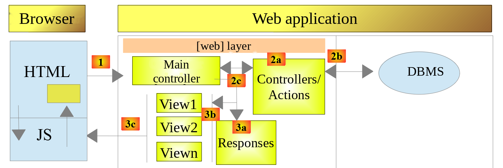
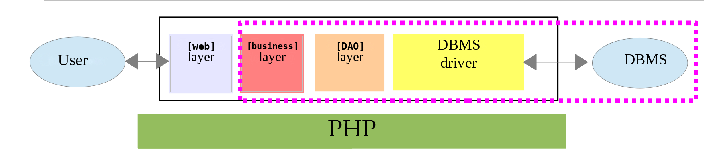
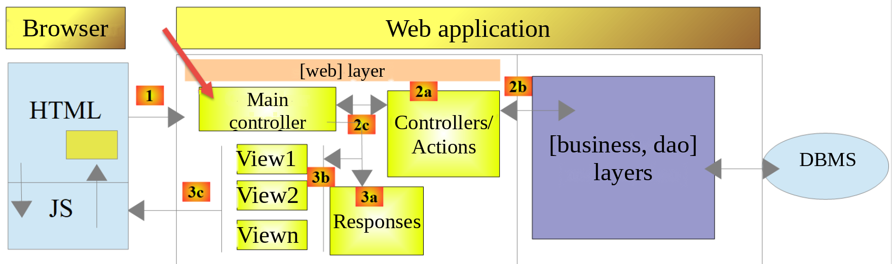
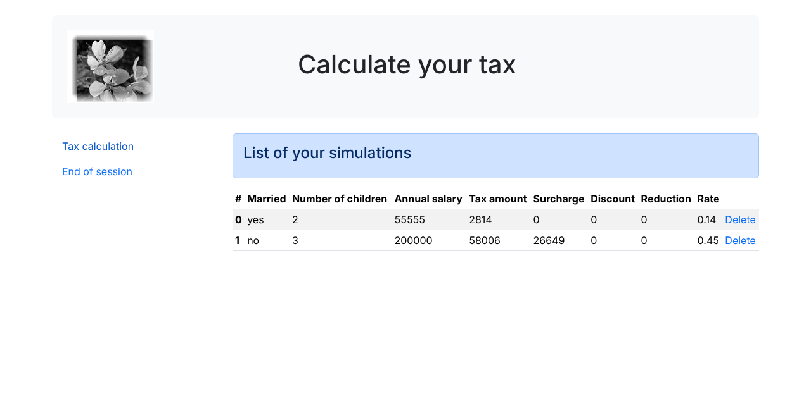
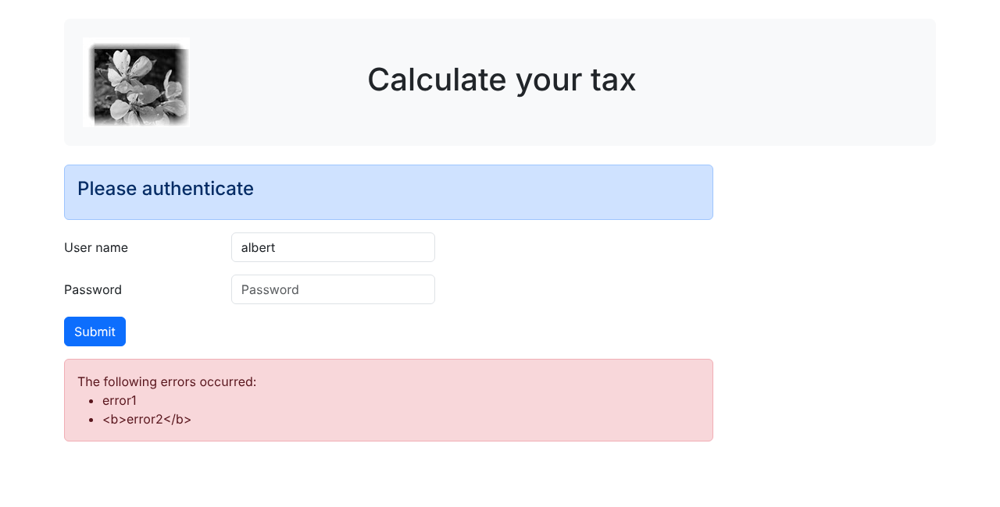
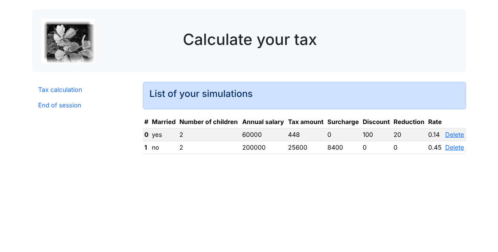
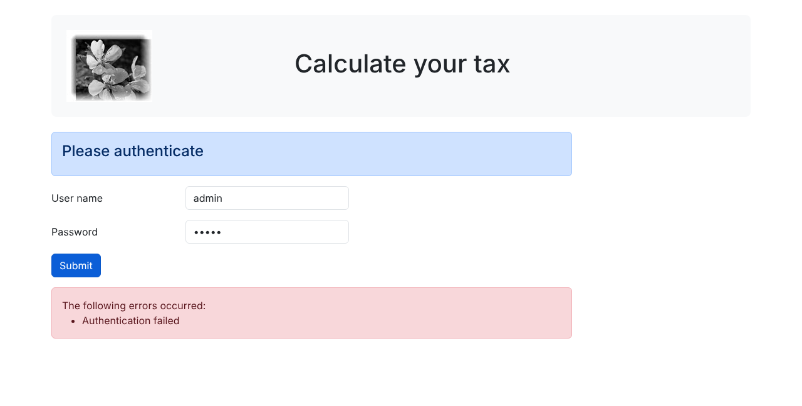
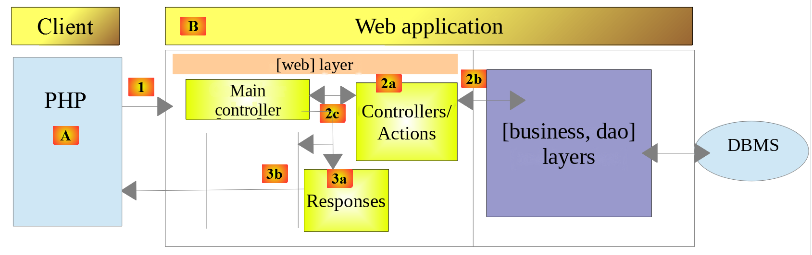
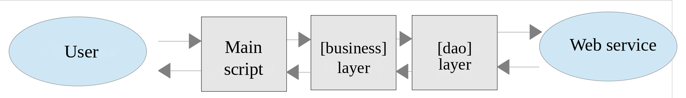
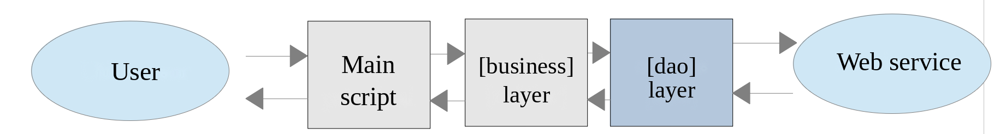

23. Ejercicio práctico – Versión 12
En este capítulo escribiremos una aplicación web que sigue la arquitectura MVC (Modelo-Vista-Controlador). La aplicación podrá devolver respuestas en tres formatos: JSON, XML y HTML. Hay un aumento significativo de complejidad entre lo que vamos a hacer y lo que hemos hecho hasta ahora. Reutilizaremos la mayoría de los conceptos vistos hasta aquí y detallaremos todos los pasos que conducen a la aplicación final.
23.1. Arquitectura MVC
Implementaremos el modelo de arquitectura conocido como MVC (Modelo–Vista–Controlador) de la siguiente manera:

El procesamiento de una solicitud del cliente se desarrollará así:
- 1 - Solicitud: los parámetros de la URL solicitada tendrán la forma [http://machine:port/context/main.php?action=anAction¶m1=v1¶m2=v2&…]. El [Main controller] utilizará el parámetro [action] de la URL para «enrutar» la solicitud hacia el controlador secundario encargado de procesar esa acción. El resto de la URL y [param1=v1¶m2=v2&…] está formado por parámetros opcionales que se pasarán a la acción. La C de MVC es la cadena [Main controller, Controller / Action]. Si ningún controlador puede procesar la acción solicitada, el servidor responderá que la acción solicitada no es válida;
- 2 - Procesamiento:
- La acción seleccionada [2a] puede utilizar los parámetros que le transmite el [Main controller]. Estos parámetros pueden provenir de varias fuentes: la ruta [/param1/param2/…] de la URL, los parámetros [param1=v1¶m2=v2] de la URL, o los parámetros enviados por el navegador junto con su solicitud;
- Al procesar la solicitud del usuario, la acción puede requerir las capas [business] y [2b] . Una vez procesada la solicitud del cliente, esta puede dar lugar a diversas respuestas. Un ejemplo clásico es: una respuesta de error si la solicitud no pudo procesarse correctamente, o una respuesta de confirmación en caso contrario;
- [Controller / Action] devolverá su respuesta, [2c], al controlador principal junto con un código de estado. Estos códigos de estado representarán de manera única el estado actual de la aplicación. Serán códigos de éxito o códigos de error;
- 3 - Respuesta:
- Según el cliente haya solicitado una respuesta JSON, XML o HTML, el [Main controller] instanciará el tipo de respuesta adecuado ([3a]) y le indicará que envíe la respuesta al cliente. El [Main controller] le pasará la respuesta y el código de estado proporcionados por el [Controller / Action] que se ejecutó;
- si el tipo de respuesta deseado es JSON o XML, la respuesta seleccionada dará formato a la respuesta del [Controller / Action] que se le proporcionó y la enviará mediante [3c]. El cliente capaz de procesar esta respuesta puede ser un script de consola PHP o un script JavaScript incrustado en una página HTML;
- si el tipo de respuesta deseado es HTML, la respuesta seleccionada elegirá una de las vistas HTML [3b] ([View1], [View2]…) según el código de estado que se le proporcionó. Esta es la V de MVC. Cada código de estado corresponde a una sola vista. Esta vista V mostrará la respuesta del [Controller / Action] ejecutado. Da formato a los datos de esta respuesta mediante HTML, CSS y JavaScript. Estos datos se denominan modelo de la vista. Es la «M» de MVC. El cliente suele ser un navegador web.
Ahora aclaremos la relación entre la arquitectura web MVC y la arquitectura en capas. Según cómo se defina el modelo, estos dos conceptos pueden estar relacionados o no. Consideremos una aplicación web MVC de una sola capa:

En el ejemplo anterior, cada componente [Controller / Action] incorpora partes de las capas [business] y [dao] . La capa [web] sí tiene una arquitectura MVC, pero la aplicación en su conjunto no tiene una arquitectura en capas. Aquí solo hay una capa que lo hace todo.
Ahora consideremos una arquitectura web de varias capas:

La capa [web] puede implementarse sin seguir el modelo MVC. Entonces tenemos una arquitectura de varias capas, pero la capa web no implementa el modelo MVC.
Por ejemplo, en el mundo .NET, la capa [web] puede implementarse con ASP.NET Core MVC, lo que da como resultado una arquitectura en capas con una capa [web] de tipo MVC. Una vez hecho esto, podemos reemplazar esta capa ASP.NET Core MVC por una capa ASP.NET Core [Razor Pages] manteniendo sin cambios el resto (lógica de negocio, DAO, controlador). Entonces tenemos una arquitectura en capas con una capa [web] que ya no es de tipo MVC.
En MVC dijimos que el modelo M es el de la vista V, es decir, el conjunto de datos que muestra la vista V. Existe otra definición del modelo M para MVC:

Muchos autores consideran que lo que está a la derecha de la capa [web] forma el modelo M de MVC. Para evitar ambigüedades, podemos referirnos a:
- el modelo de dominio cuando nos referimos a todo lo que está a la derecha de la capa [web];
- el modelo de la vista cuando nos referimos a los datos que muestra una vista V.
23.2. Estructura del proyecto
Para este proyecto utilizamos una estructura de directorios que refleja el modelo MVC. En [VS Code], la carpeta [scripts-web/tax/version-12] contiene los siguientes elementos:
- [main.php] es el controlador principal de nuestro modelo MVC. Es la C de MVC;
- la carpeta [Controllers] contiene los controladores secundarios. Cada uno se encarga de una acción específica. Esta acción se indica en la URL, por ejemplo, […/main.php?action=authenticate-user]. Según esta acción, el controlador principal [main.php] seleccionará un controlador secundario (en este caso, [AuthenticateUserController]) para atender la acción solicitada. Estos controladores también forman parte de la C de MVC;
- la carpeta [Responses] contiene las clases encargadas de enviar la respuesta al cliente. Hay una clase por cada tipo de respuesta deseado:
- [JsonResponse]: para una respuesta JSON;
- [XmlResponse]: para una respuesta de tipo XML;
- [HtmlResponse]: para una respuesta HTML;
- La carpeta [Views] contiene las vistas HTML cuando se desea una respuesta HTML. Esta es la V de MVC. Son activadas por la clase [HtmlResponse], que les pasa los datos que deben mostrar. Estos datos son el modelo de la vista. Según la terminología adoptada para la M, estos datos pueden ser la M de MVC;
- la carpeta [Tests] contiene versiones de prueba de las vistas, que permiten ajustar su apariencia visual;
- la carpeta [Entities] contiene clases y enumeraciones utilizadas por los distintos controladores;
- la carpeta [Data] contiene el archivo de configuración [config.json] y el archivo de logs [logs.txt]. Como en las versiones anteriores, el archivo [.htaccess] de la versión 8 impide que [Apache] sirva sus archivos: la configuración contiene contraseñas.
El curso de PHP 7 copiaba las clases de las capas [business] y [dao] (carpeta [Model]) y las utilidades (carpeta [Utilities]). Nosotros no las copiamos: como en las versiones anteriores, estas clases se cargan desde las carpetas de las versiones 5, 8, 9 y 11, donde se escribieron originalmente.
Con esta estructura de directorios, podemos describir el flujo de procesamiento de una acción solicitada por un cliente:
- [main.php] recibe la solicitud;
- tras realizar algunas verificaciones preliminares (¿la acción es una de las aceptadas?), reenvía la solicitud al controlador secundario encargado de procesar esa acción;
- el controlador secundario realiza sus tareas. Para llevar a cabo esta tarea, puede necesitar las capas [business] y [dao], así como las entidades de la carpeta [Entities]. Devuelve su respuesta al controlador principal [main.php], que lo activó;
- según el tipo de respuesta [JSON, XML, HTML] solicitado por el cliente, el controlador principal [main.php] activa una de las respuestas de la carpeta [Responses];
- Las respuestas [JsonResponse, XmlResponse] envían al cliente la respuesta JSON o XML, respectivamente;
- La respuesta [HtmlResponse] utiliza una de las vistas de la carpeta [Views] para enviar una respuesta HTML al cliente;
- los distintos componentes acceden a la clase [Logger] de la versión 9 para escribir logs en el archivo [Data/logs.txt]. Se registra lo siguiente:
- la acción solicitada;
- la respuesta de su controlador. Esta se registra en formato JSON independientemente del tipo [JSON, XML, HTML] solicitado;
- en caso de error fatal (estado HTTP 500 Internal Server Error), el controlador principal [main.php] envía un correo electrónico al administrador mediante la clase [SendAdminMail] de la versión 9.
23.3. Acciones de la aplicación
El cliente envía al servidor web la acción que se debe ejecutar como parámetro [action] en la URL [/main.php?action=xxx]. El curso de PHP 7 enumeraba en el archivo de configuración las acciones permitidas, cada una asociada con el nombre de su clase de controlador. Nosotros usamos una enumeración (PHP 8.1), la enumeración [Action] de la carpeta [Entities]:
Comentarios
- línea 9: la enumeración [Action] es una enumeración «con valores» (backed): cada uno de sus casos tiene un valor, en este caso de tipo [string]. Ya vimos las enumeraciones en el capítulo sobre clases;
- línea 11: [init-session] inicia una sesión de simulaciones de cálculo de impuestos. Esta acción especifica el tipo de respuestas deseado: [JSON, XML, HTML];
- línea 12: una vez establecido el tipo de sesión, el cliente debe autenticarse mediante la acción [authenticate-user]. Mientras el cliente no esté autenticado, todas las demás acciones están prohibidas, excepto [init-session];
- línea 13: una vez autenticado, el cliente puede realizar una serie de cálculos de impuestos mediante la acción [calculate-tax];
- línea 14: en cualquier momento, el cliente puede solicitar ver la lista de simulaciones que ha realizado mediante la acción [list-simulations];
- línea 15: puede eliminar algunas de ellas mediante la acción [delete-simulation];
- línea 16: el cliente termina su sesión de simulaciones mediante la acción [end-session]. A partir de ese momento, deberá iniciar sesión nuevamente si desea utilizar la aplicación;
- línea 17: en la aplicación HTML, la acción [display-tax-calculation] muestra el formulario que sirve para calcular el impuesto;
- líneas 20–23: una enumeración puede tener métodos. Dentro de un método, [$this] se refiere al elemento de la enumeración para el cual se invoca el método. El método [requiresSessionType] indica si la acción solo puede ejecutarse cuando se conoce el tipo de sesión: es el caso de todas las acciones excepto [init-session]. Los casos de una enumeración son objetos únicos: se comparan mediante el operador [===];
- líneas 26–32: el método [requiresAuthentication] determina si la acción solo puede ser ejecutada por un usuario autenticado: es el caso de todas las acciones excepto [init-session] y [authenticate-user]. La expresión [match] permite varios valores, separados por comas, dentro de una misma rama.
Estas reglas, que en el curso de PHP 7 se escribían en el controlador principal, ahora se agrupan junto con las definiciones de las acciones.
23.4. Configuración de la aplicación web
La aplicación se configura mediante el siguiente archivo JSON [Data/config.json]:
Comentarios
- línea 2: el archivo JSON que describe la base de datos MySQL [dbtaxes-2019], que corresponde a la versión 8. La ruta es relativa a la carpeta [version-12];
- Líneas 3–33: los archivos PHP de la aplicación. Estos contienen primero las clases que ya se han escrito:
- las entidades [TaxException, TaxAdminData, Database] y la clase [Utilities] de la versión 5;
- las capas [dao] y [business] de las versiones 8 y 9;
- las utilidades [Logger] y [SendAdminMail] de la versión 9 y [XmlUtilities] de la versión 11;
- y las clases de la versión 12, que presentaremos a continuación. El archivo PHP 7 también contenía las rutas absolutas a bibliotecas de terceros ([C:/myprograms/laragon-lite/www/vendor/autoload.php]): el cargador de clases de [Composer] ahora lo carga directamente [main.php], mediante una ruta relativa;
- líneas 34–39: el usuario autorizado para utilizar la aplicación;
- líneas 40–48: la información de contacto por correo electrónico del administrador de la aplicación. El correo se envía al servidor [Mailpit], que escucha en el puerto 1025 (véase la versión 9);
- línea 49: la ruta del archivo de logs;
- líneas 50–54: los detalles del servidor [Redis], que sirve como memoria de ámbito para [application] (véase la versión 10);
- líneas 55–59: asociaciones [HTML view => array of the status codes leading to this view]. Se describen un poco más adelante;
- línea 60: la vista [view-errors.php] se muestra en una sesión HTML siempre que ocurre un error anormal:
- Una aplicación JSON o XML suele ser consultada por un cliente programado. El cliente pasa parámetros al servidor, que pueden faltar o ser incorrectos. Los controladores manejan estos casos y devuelven códigos de error al cliente. Deben manejarse todos los casos de error posibles;
- con una aplicación HTML es un poco diferente. En un uso normal, la aplicación web utiliza solo un subconjunto de los casos de uso posibles de los clientes JSON y XML. Veamos un ejemplo: la acción [calculate-tax] espera tres parámetros enviados (mediante un POST): [married, children, salary]. Con un cliente JSON que permite escribir la URL manualmente, se puede solicitar la acción [calculate-tax] con un GET en lugar de un POST, o con un POST sin ningún parámetro cuando se requieren tres, y así sucesivamente. El servidor JSON debe manejar todos estos casos. Con una aplicación web, la acción [calculate-tax] se solicitará desde un formulario web en el que ninguno de los dos casos anteriores es posible: la acción [calculate-tax] se invocará con un POST y con los tres parámetros [married, children, salary]. Sin embargo, el usuario puede reproducir ciertos errores escribiendo manualmente valores de URL en el navegador. Por razones de seguridad, este escenario debe manejarse;
- la vista [view-errors.php] se mostrará siempre que un controlador secundario devuelva un código de estado incompatible con la aplicación web, es decir, un código de estado que no esté presente en la [views] key del archivo de configuración. Optamos por esta solución con fines didácticos. Otra opción posible sería volver a mostrar la vista que se exhibe actualmente en el navegador del cliente, de modo que el usuario tenga la impresión de que el servidor no responde a sus solicitudes de URL elaboradas manualmente.
En comparación con el archivo de configuración del curso de PHP 7, se han eliminado las claves [rootDirectory] (el directorio raíz ahora se conoce como [main.php]), [actions] (reemplazada por la enumeración [Action]) y [types] (reemplazada por la enumeración [ResponseType] que se presenta más adelante).
23.5. Herramientas y bibliotecas
23.5.1. La herramienta [curl]
El curso de PHP 7 usaba la herramienta gráfica [Postman] para consultar los distintos componentes de la URL de la aplicación web. Nosotros usamos la herramienta de línea de comandos [curl], presentada en el capítulo sobre servicios web. Nos permite:
- usar cualquier URL: se crean manualmente;
- consultar el servidor web mediante GET, POST, PUT, OPTIONS… (opciones [-X] y [-d]);
- especificar los parámetros de GET (en la URL) o de POST (opciones [-d] y [--data-urlencode]);
- establecer los encabezados HTTP de la solicitud (opción [-H]);
- recibir una respuesta en formato JSON, XML o HTML;
- acceder a los encabezados HTTP de la respuesta (opción [-i]);
- manejar la cookie de sesión como un navegador: la opción [-c cookies.txt] guarda las cookies enviadas por el servidor en el archivo [cookies.txt], mientras que la opción [-b cookies.txt] las devuelve al servidor.
Como generamos manualmente las URL solicitadas, podremos probar todos los escenarios de error posibles y ver cómo responde el servidor. Recuerde que en una terminal [PowerShell] debe escribir [curl.exe] en lugar de [curl]. Todos los comandos de este capítulo se escriben en una terminal abierta en cualquier directorio de trabajo, donde [curl] crea el archivo [cookies.txt].
Para enviar por POST el parámetro [married], usaremos la opción [--data-urlencode "married=yes"], que codifica en formato URL el nombre y el valor del parámetro si es necesario. Los nombres de los parámetros ([married], [number]...) no contienen caracteres acentuados, por lo que en la URL podemos escribirlos tal cual.
23.5.2. La biblioteca Symfony / Serializer
El curso de PHP 7 usaba la biblioteca [Symfony / Serializer] para serializar las respuestas del servidor a JSON y XML, que podían contener objetos [Simulation]. Tenía dos ventajas: la misma API para JSON y XML; la serialización de objetos con atributos privados, expuestos mediante getters.
No la usamos en esta versión, aunque está instalada en la carpeta [vendor] del curso:
- nuestra clase [Simulation] es una clase [readonly] con atributos públicos (véase el párrafo siguiente). La función [json_encode] serializa directamente los atributos públicos de un objeto: la serialización JSON ya no requiere una biblioteca;
- para XML, contamos con la clase [XmlUtilities] de la versión 11, que produce documentos XML con el mismo formato que los de la versión 11, que los clientes XML ya saben procesar. Basta con proporcionarle un arreglo, después de convertir los objetos [Simulation] en arreglos asociativos;
- el servidor nunca tiene que deserializar JSON o XML a objetos, que era la otra ventaja destacada por el curso de PHP 7.
Por lo tanto, la biblioteca [Symfony / Serializer] solo añadiría una dependencia más aquí. Sigue siendo una buena opción cuando se necesita deserializar documentos a objetos tipados o manejar muchos formatos distintos.
23.6. Entidades de la aplicación
La carpeta [Entities] contiene dos enumeraciones, [Action] (ya presentada) y [ResponseType] (que se presenta junto con las respuestas del servidor), y dos clases. La clase [Simulation] encapsula los elementos de una simulación de cálculo de impuestos:
Comentarios
- línea 9: la clase es [readonly] (PHP 8.2): todos sus atributos son de solo lectura. Una simulación es un objeto inmutable: una vez construido, no cambia;
- líneas 13–24: los atributos se declaran e inicializan mediante los parámetros del constructor (PHP 8.0). Están tipados: [string] para el estado civil, [int] para los demás parámetros y los importes, y [float] para la tasa de impuesto;
- los atributos son públicos: como son de solo lectura, ya no es necesario protegerlos con getters. La clase [Simulation] de PHP 7 derivaba de la clase [BaseEntity], tenía ocho atributos [protected] sin tipo y ocho getters.
La segunda clase, [ControllerResult], representa el resultado que un controlador secundario devuelve al controlador principal:
- línea 13: el código de estado HTTP de la respuesta que se enviará al cliente;
- línea 15: el estado de la aplicación después de ejecutar la acción;
- línea 17: la respuesta propiamente dicha. Su tipo depende de la acción: un mensaje, una lista de mensajes de error, una simulación o una lista de simulaciones. El tipo [mixed] (PHP 8.0) acepta cualquier valor;
- línea 19: los encabezados HTTP que se agregarán a la respuesta. Este parámetro es opcional.
En el curso de PHP 7, los controladores devolvían el arreglo [[$statusCode, $status, $content, $headers]]. Un objeto con atributos nombrados y tipados es más seguro: no es posible equivocarse en el orden de los elementos.
23.7. Las utilidades de la aplicación
La aplicación utiliza tres utilidades que ya se describieron:
- la clase [Logger] de la versión 9 permite registrar eventos en un archivo de texto;
- la clase [SendAdminMail] de la versión 9 permite enviar un correo electrónico al administrador de la aplicación;
- la clase [XmlUtilities] de la versión 11 obtiene el documento XML a partir de una tabla.
23.8. Las capas [business] y [dao]

Las clases e interfaces de las capas [business] y [dao] se definieron y utilizaron en versiones anteriores:
Clase | Función |
TaxException | La clase de excepciones lanzadas por la capa [dao]. Versión 5, carpeta [Entities] |
InterfaceServerDao | Interfaz implementada por la capa [dao] del servidor. Versión 8, carpeta [Dao] |
ServerDao | Implementación de la interfaz [InterfaceServerDao]: los datos fiscales se leen desde la base de datos. Versión 8 |
ServerDaoWithSession | Clase derivada de [ServerDao]: los datos fiscales pueden proporcionarse al constructor. Versión 9, carpeta [Dao] |
InterfaceServerBusiness | Interfaz implementada por la capa [business] del servidor. Versión 8, carpeta [Business] |
ServerBusiness | Implementación de la interfaz [InterfaceServerBusiness]: cálculo del impuesto. Versión 8 |
Por lo tanto, la aplicación que estamos desarrollando hace un uso intensivo de elementos que ya se presentaron y utilizaron:
- las capas [business] y [dao] ;
- las utilidades [Logger], [SendAdminMail], y [XmlUtilities];
- las entidades [TaxException, TaxAdminData, Database].
Nos centraremos en la capa [web] de la aplicación:

23.9. El controlador principal [main.php]
23.9.1. Introducción
El controlador principal [main.php] se configura mediante el archivo [Data/config.json]. Repasemos su posición en nuestra arquitectura MVC:

El controlador principal [main.php] es el primer elemento de la arquitectura MVC que procesa la solicitud del cliente. Tiene varias funciones:
- Primero, realiza verificaciones básicas:
- ¿Existe su archivo de configuración y es válido?
- carga todas las dependencias del proyecto. Esto implica cargar todos los componentes de la arquitectura MVC;
- ¿Se especificó la acción solicitada? De ser así, ¿es válida?
- Si la acción solicitada es válida, selecciona [2a]—el controlador secundario que la procesará— y le pasa la información que necesita: la configuración de la aplicación, la solicitud HTTP y la sesión;
- obtiene [2c] la respuesta del controlador secundario. Según el tipo (JSON, XML, HTML) de respuesta solicitado por el cliente, selecciona [3a] la respuesta (JsonResponse, XmlResponse, HtmlResponse) encargada de enviar la respuesta al cliente y le pasa toda la información que necesita (la solicitud HTTP, la sesión, la configuración de la aplicación y la respuesta del controlador secundario).
23.9.2. [main.php] - 1
El inicio del controlador principal [main.php] es el siguiente:
Comentarios
- Líneas 10–12: el controlador principal utiliza las siguientes clases de la biblioteca Symfony [HttpFoundation]:
- [Request]: la solicitud HTTP que se está procesando;
- [Response]: la respuesta HTTP al cliente;
- [Session]: la sesión de la aplicación web;
- Línea 15: los errores detectados por PHP no se incluyen en el documento enviado al cliente: corromperían las respuestas JSON o XML. Permanecen registrados en el log de errores del servidor web (el archivo [error.log] de Apache). Durante el desarrollo, esta línea puede comentarse: los errores de PHP aparecerán entonces en las respuestas recibidas por [curl] o por el navegador. Esto ayuda a depurar. El script de PHP 7 también modificaba el nivel de notificación de errores mediante [error_reporting(E_ALL && !E_WARNING && !E_NOTICE)], una expresión que, dicho sea de paso, era incorrecta (requería los operadores bit a bit [&] y [~]): por el contrario, no queremos ignorar ningún error;
- línea 18: el directorio raíz de la aplicación, que es el del script [main.php]. Las rutas del archivo de configuración son relativas a este directorio. La constante se define en el espacio de nombres [Application]: por lo tanto, es visible para las clases de ese espacio de nombres, en particular el controlador que calculará el impuesto;
- línea 20: la ruta del archivo de configuración;
- línea 23: se carga el cargador de clases de [Composer], que pone a disposición las clases de Symfony y Predis. Se carga antes de leer la configuración: la respuesta de error que se envía si la configuración falla utiliza la clase Symfony [Response]. El script de PHP 7 usaba aquí una ruta absoluta;
- líneas 26–29: se lee el archivo de configuración. Si no existe o no se puede leer, se envía al cliente una respuesta de error con el estado [131] mediante la función [sendConfigError];
- líneas 30–34: se decodifica el JSON del archivo de configuración. Con la opción [JSON_THROW_ON_ERROR], la función [json_decode] lanza una excepción [JsonException] si el JSON no es válido. Entonces se envía una respuesta de error con el estado [132]. A partir de PHP 8.0, la cláusula [catch] puede omitir la variable de la excepción cuando no se usa: [catch (\JsonException)];
Aquí tenemos un archivo de configuración existente y sintácticamente correcto. También sería necesario verificar que las claves esperadas estén realmente presentes en este archivo. Consideraremos que esto forma parte del trabajo normal de depuración del desarrollador.
La función [sendConfigError] se define al final del script:
- Línea 124: el tipo de retorno [never] (PHP 8.1) indica que la función nunca devuelve el control al llamador; siempre termina con [exit] o con una excepción. Un analizador de código como la extensión [PHP Intelephense] de [VS Code] sabe entonces que el código posterior a una llamada a [sendConfigError] se ejecuta solo si se pudo leer la configuración;
- línea 126: todas las respuestas generadas por la aplicación web tendrán tres claves:
- [action]: la acción solicitada por el cliente (aquí desconocida);
- [status]: el estado de la aplicación después de ejecutar esta acción;
- [response]: la respuesta del servidor web;
- línea 127: como las clases de la aplicación aún no se han cargado, se construye directamente una respuesta de Symfony, con el estado [500 Internal Server Error];
- línea 128: la respuesta es un documento JSON codificado en UTF-8;
- línea 129: la respuesta se envía al cliente.
23.9.3. [curl] Pruebas - 1
Verificaremos el comportamiento del servidor cuando el archivo de configuración falta o es incorrecto. Cambiemos el nombre de [Data/config.json] a [Data/config2.json] y luego solicitemos la URL del controlador principal:
- Línea 1: la opción [-i] indica a [curl] que muestre los encabezados HTTP de la respuesta;
- Línea 2: el servidor devolvió el código de estado [500 Internal Server Error];
- línea 8: la respuesta es un documento JSON;
- línea 10: el documento JSON de la respuesta. Es efectivamente el que esperábamos.
Devolvamos al archivo su nombre [config.json] y luego hagámoslo sintácticamente incorrecto, por ejemplo, eliminando todo lo que sigue a su segunda línea. Ya no mostramos los encabezados HTTP:
Esta primera prueba nos mostró que podemos enviar cualquier tipo de solicitud al servidor bajo prueba y que recibimos la respuesta completa: los encabezados HTTP y el documento que los sigue. No olvidemos restaurar el contenido del archivo [config.json].
23.9.4. [main.php] – 2
Retomemos ahora el análisis del controlador principal [main.php]:
Comentarios
- líneas 37–39: incluimos todas las dependencias de la aplicación. Ya hemos visto este código varias veces;
- línea 42: toda la información de la solicitud del cliente está encapsulada en el objeto Symfony [Request];
- líneas 44–45: se inicia una nueva sesión, o se recupera la sesión existente si el cliente envió una cookie de sesión. La sesión se inicia después de cargar las clases de la aplicación: contendrá objetos [Simulation], y la clase [Simulation] debe estar definida cuando PHP reconstruya los objetos de la sesión;
- Líneas 48–59: intentamos crear el objeto [Logger], que nos permitirá registrar eventos en el archivo [Data/logs.txt]. Esta creación puede fallar: el constructor de [Logger] lanza entonces una excepción [TaxException];
- líneas 52–56: la respuesta de error, con el estado [133]. El mensaje utiliza el nombre del archivo de log indicado en la configuración y no la ruta completa: la ruta completa revelaría al cliente la estructura de carpetas del servidor;
- línea 57: la respuesta se envía mediante un objeto [JsonResponse], sin registro en el log, ya que no se pudo crear uno. Las clases de la aplicación ya están cargadas: pueden utilizarse;
- Línea 58: se termina el script.
Todas las respuestas enviadas al cliente implementan la siguiente interfaz [InterfaceResponse], de la carpeta [Responses]:
- Líneas 23–31: la interfaz [InterfaceResponse] tiene un único método, [send], para enviar la respuesta al cliente;
- líneas 16–22: el significado de los distintos parámetros del método [send];
- líneas 27–29: los parámetros [$statusCode], [$content] y [$headers] contienen el resultado del controlador secundario y las claves [action, status] agregadas por el controlador principal. Sin embargo, la respuesta puede requerir información adicional. Por eso se le proporcionan los tres primeros parámetros, que le dan acceso a toda la información sobre la solicitud, la sesión y la configuración;
- Línea 30: la respuesta requiere [Logger] porque registrará en el log la respuesta enviada al cliente. El tipo [?Logger] indica que el parámetro puede ser [null]: es el caso cuando no se pudo crear el log. En la firma de PHP 7, los parámetros [Request $request = NULL] y [Logger $logger = NULL] eran implícitamente anulables: esta sintaxis está obsoleta desde PHP 8.4. Además, declarar un parámetro opcional antes de parámetros obligatorios está obsoleto desde PHP 8.0.
La clase [JsonResponse] implementa la interfaz [InterfaceResponse] de la siguiente manera:
Comentarios
- Línea 13: la clase extiende la clase abstracta [ParentResponse], que implementa la interfaz [InterfaceResponse]. Todos los tipos de respuesta extienden esta clase. Es esta clase padre la que envía la respuesta al cliente. Como este código es común a todos los tipos de respuesta, se factorizó en una clase padre. Nuestra clase [JsonResponse] no es la clase [JsonResponse] de Symfony: está en el espacio de nombres [Application] y no importamos la clase de Symfony;
- Línea 15: el atributo [Override] (PHP 8.3) indica que el método [send] implementa un método de una clase padre o de una interfaz. Si no fuera así (por un error tipográfico en el nombre, por ejemplo), PHP informaría un error;
- Línea 26: la respuesta [$content] se serializa a JSON. Las opciones de [json_encode] se definen una vez por todas en la clase padre. La función [json_encode] serializa un objeto [Simulation] como un objeto JSON cuyas claves son los nombres de sus atributos públicos;
- línea 28: se solicita a la clase padre que envíe la respuesta al cliente, especificando el tipo de documento como [application/json];
- línea 30: se registra en el log el JSON de la respuesta. El operador nullsafe [?->] invoca el método [write] solo si [$logger] no es [null].
El código de la clase padre [ParentResponse] es el siguiente:
Comentarios
- Línea 13: la clase es abstracta; no se puede instanciar. Implementa la interfaz [InterfaceResponse] sin definir el método [send], que será definido por las clases hijas. En el curso de PHP 7, [ParentResponse] era una clase normal que las clases hijas extendían mientras implementaban la interfaz;
- Línea 16: las opciones de [json_encode] comunes a todas las respuestas. Desde PHP 8.3, una constante de clase puede tener tipo:
- [JSON_UNESCAPED_UNICODE]: los caracteres acentuados se escriben tal cual y no en la forma [\u00e9];
- [JSON_UNESCAPED_SLASHES]: el carácter [/] no se codifica como [\/];
- [JSON_PRESERVE_ZERO_FRACTION]: un número real siempre se escribe con punto decimal (una tasa cero se escribe como [0.0]);
- [JSON_THROW_ON_ERROR]: un error de serialización lanza una excepción [JsonException];
- línea 24: el método [sendResponse] envía la respuesta al cliente. Observe que el cuerpo de la respuesta [$body] es de tipo [string] y, por lo tanto, está listo para enviarse;
- línea 27: el constructor de la clase Symfony [Response] recibe el cuerpo de la respuesta, el estado y los encabezados;
- línea 29: el tipo del documento enviado, codificado en UTF-8;
- línea 31: la respuesta se envía al cliente;
- línea 35: el método [log] registra la respuesta como JSON. Lo usarán las respuestas XML y HTML;
- líneas 42–49: el método estático [toArray] devuelve los datos [$data], en los que los objetos se reemplazaron por el arreglo asociativo de sus atributos públicos. Lo usará la respuesta XML:
- la expresión [match (true)] selecciona la primera rama cuya condición es verdadera;
- línea 45: un objeto se reemplaza por el arreglo de sus atributos, devuelto por la función [get_object_vars]. Cuando se invoca desde fuera de la clase del objeto, devuelve solo sus atributos públicos. Los propios atributos pueden ser objetos; por lo tanto, se invoca [toArray];
- línea 46: cada elemento de un arreglo se transforma mediante [toArray]. La sintaxis [self::toArray(...)] (PHP 8.1) crea una función anónima (un [Closure]) a partir del método [toArray]: es la sintaxis de los callables de primera clase. Con un solo arreglo, la función [array_map] conserva las claves del arreglo;
- línea 47: los demás valores (cadenas, números) se devuelven tal cual.
23.9.5. [curl] Pruebas – 2
Modifiquemos el archivo [config.json] de la siguiente manera: ["logsFilename": "Data"]. El archivo de log ahora es [Data], que es una carpeta. Por lo tanto, la creación del archivo [Data] debería fallar:
- Línea 2: estado [500 Internal Server Error];
- Línea 7: la cookie de sesión: la sesión se inició antes de crear el log;
- línea 12: la respuesta JSON esperada.
Restauremos el valor [Data/logs.txt] en la clave [logsFilename].
23.9.6. [main.php] – 3
Continuemos examinando el controlador principal [main.php]:
Comentarios
- línea 62: registramos en el log el hecho de que tenemos una nueva solicitud. No podíamos hacerlo antes porque no estábamos seguros de tener un archivo de log válido;
- línea 65: el parámetro [action] debe formar parte de la URL con la forma [main.php?action=anAction]. Por lo tanto, forma parte de los parámetros [$request->query] de la URL. El método [getString] de Symfony devuelve el valor del parámetro como cadena, o una cadena vacía si el parámetro no existe;
- línea 66: se registra en el log la acción solicitada;
- línea 68: el método estático [tryFrom] de una enumeración con valores devuelve el caso de la enumeración cuyo valor es [$actionName], o [null] si ningún caso tiene ese valor. El método [from] haría lo mismo, pero en el segundo caso lanzaría una excepción [ValueError];
- líneas 70–78: verificaciones preliminares. Su resultado, [$error], es un arreglo [status, message] que describe el primer error encontrado, o [null] si la acción puede ejecutarse. Las condiciones se evalúan en el siguiente orden:
- línea 71: falta el parámetro [action] en la URL: estado [101];
- línea 72: la acción es desconocida: estado [102];
- línea 73: la aplicación ofrece tres tipos de respuesta (JSON, XML, HTML). Este tipo lo establece la acción [init-session], que lo coloca en la sesión, asociado con la clave [type]. Excepto la acción [init-session], todas las acciones deben ejecutarse con una clave [type] en la sesión; de lo contrario, el estado es [103];
- Línea 75: excepto las acciones [init-session] y [authenticate-user], todas las acciones deben ejecutarse después de la autenticación. La autenticación se realiza mediante la acción [authenticate-user], que, si la autenticación es exitosa, establece una clave [user] en la sesión; de lo contrario, el estado es [104];
- línea 77: sin error;
- líneas 79–82: si la acción solicitada o su contexto de ejecución es incorrecto, la respuesta de error se prepara pero no se envía: estado [400 Bad Request], estado, lista de errores (con un solo error en este caso). La desestructuración [[$status, $message] = $error] asigna los dos elementos del arreglo [$error] en una sola instrucción;
- líneas 85–93: esta es una operación válida. Instanciamos el controlador secundario que la procesará. El curso de PHP 7 construía el nombre de la clase del controlador a partir de la configuración ([__NAMESPACE__ . $config["actions"][$action]]) y luego lo instanciaba con [new $controller()]. La expresión [match] sobre los casos de la enumeración [Action] es más segura: el analizador de código de [VS Code] verifica los nombres de las clases y, si se agrega un caso a la enumeración sin agregarlo aquí, [match] lanzará una excepción [UnhandledMatchError] en lugar de instanciar una clase cualquiera;
- línea 94: el nombre del controlador secundario se registra en el log para verificarlo durante el desarrollo. A partir de PHP 8.0, [$object::class] devuelve el nombre completo de la clase de un objeto;
- línea 95: se ejecuta el controlador secundario. Devuelve un objeto [ControllerResult]. Volveremos a los controladores secundarios un poco más adelante;
- Llegamos entonces a la línea 99, ya sea porque ocurrió un error o después de ejecutar un controlador. En ambos casos, el objeto [$result] contiene todo lo necesario para generar la respuesta al cliente;
- Línea 99: la respuesta al cliente es un arreglo de tres claves llamadas [action, status, response]. La clave [action] facilitará un mejor seguimiento de los logs en el archivo [logs.txt]. La clave [status] servirá para dos propósitos:
- permitirá a los clientes JSON y XML determinar el estado en el que la acción ejecutada ha dejado a la aplicación web;
- en el caso de una respuesta HTML, permitirá al sistema seleccionar la vista HTML que se enviará al navegador del cliente;
- Líneas 101–104: caso especial del código de estado [500 Internal Server Error]. Si un controlador estableció este código de estado, significa que la aplicación no puede funcionar. Es el caso, por ejemplo, del cálculo de impuestos si el DBMS o el servidor [Redis] no se ha iniciado o ya no responde. Entonces se envía un correo electrónico al administrador de la aplicación para notificarle, mediante la clase [SendAdminMail] de la versión 9;
- Línea 107: se determina el tipo de respuesta [JSON, XML, HTML]. Si la acción [init-session] se ejecutó correctamente, este tipo está presente en la sesión, asociado con la clave [type]. Si no es así, el método [get] de la sesión devuelve el valor predeterminado [""], [tryFrom] devuelve [null], y el operador [??] selecciona el tipo JSON;
- Líneas 109–117: el método [response] de la enumeración [ResponseType], que se describe más adelante, devuelve el objeto [JsonResponse], [XmlResponse] o [HtmlResponse], según corresponda al tipo de sesión. Su método [send] envía la respuesta al cliente. Como las tres clases implementan la misma interfaz [InterfaceResponse], sus métodos [send] tienen todos la misma firma;
- Línea 119: el controlador principal ha terminado su trabajo. El script de PHP 7 cerraba aquí el archivo de log; nuestra clase [Logger] ya no tiene un método [close].
23.9.7. [curl] Pruebas – 3
Probaremos varios escenarios de error para el parámetro [action] de la URL:
- Líneas 1–2: una solicitud sin el parámetro [action] en la URL: estado [101];
- líneas 4–5: una solicitud con un parámetro [action] no válido: estado [102];
- líneas 7–8: una acción reconocida, pero el tipo de sesión (json, xml, html) aún no se ha especificado: estado [103].
En los tres casos, la clave [response] es una lista de errores, que en este caso contiene un solo error.
23.10. Controladores secundarios
Cada acción la ejecuta uno de los controladores de la carpeta [Controllers]:

En la arquitectura general de la aplicación presentada arriba, los controladores secundarios están en [2a]. Cada controlador implementa la siguiente interfaz [InterfaceController]:
Comentarios
- Línea 20: todos los controladores secundarios se ejecutan mediante el método [execute]. A este método se le pasa la información que conoce el controlador principal:
- [array $config]: la configuración de la aplicación;
- [Request $request]: la solicitud HTTP que se está procesando;
- [Session $session]: la sesión actual de la aplicación web;
- El método [execute] devuelve un objeto [ControllerResult]: el código de estado HTTP de la respuesta, el estado de la aplicación al finalizar la ejecución, la respuesta que se enviará al cliente y los encabezados HTTP que se agregarán a la respuesta.
El método de PHP 7 tenía un cuarto parámetro, [array $infos = NULL], que se incluyó «por si acaso» pero nunca se usó: lo hemos eliminado. Cada controlador secundario es invocado por el siguiente código del controlador principal:
23.11. Acciones
Repasaremos ahora las distintas acciones posibles del servicio web:
Acción | Función | Contexto de ejecución |
init-session | Sirve para especificar el tipo (json, xml, html) de las respuestas deseadas | Solicitud GET main.php?action=init-session&type=x Puede emitirse en cualquier momento |
authenticate-user | Autoriza o rechaza el inicio de sesión de un usuario | Solicitud POST main.php?action=authenticate-user La solicitud debe incluir dos parámetros POST: [user, password] Solo puede emitirse si se conoce el tipo de sesión (json, xml, html) |
calculate-tax | Realiza una simulación de cálculo de impuestos | Solicitud: POST main.php?action=calculate-tax La solicitud debe tener tres parámetros POST: [married, children, salary] Solo puede emitirse si se conoce el tipo de sesión y el usuario está autenticado |
list-simulations | Solicita la lista de simulaciones realizadas desde el inicio de la sesión | Solicitud GET main.php?action=list-simulations La solicitud no acepta ningún otro parámetro Solo puede emitirse si se conoce el tipo de sesión y el usuario está autenticado |
delete-simulation | Elimina una simulación de la lista de simulaciones | Solicitud GET main.php?action=delete-simulation&number=x La solicitud no acepta ningún otro parámetro Solo puede emitirse si se conoce el tipo de sesión y el usuario está autenticado |
end-session | Termina la sesión de simulaciones | Solicitud GET main.php?action=end-session Técnicamente, se elimina la antigua sesión web y se crea una nueva sesión Solo puede emitirse si se conoce el tipo de sesión y el usuario está autenticado |
display-tax-calculation | Muestra la vista de cálculo de impuestos (aplicación HTML) | Solicitud GET main.php?action=display-tax-calculation Solo puede emitirse si se conoce el tipo de sesión y el usuario está autenticado |
Todos los controladores secundarios proceden de la misma manera:
- verifican sus parámetros. Estos se encuentran en el objeto [$request->query] para los parámetros presentes en la URL y en el objeto [$request->request] para los que se envían en el cuerpo (solicitud POST);
- Un controlador es similar a una función o método que verifica la validez de sus parámetros. Sin embargo, para el controlador es un poco más complicado:
- los parámetros esperados pueden faltar;
- los parámetros esperados son todos cadenas de caracteres, mientras que una función puede especificar el tipo de sus parámetros. Si el parámetro esperado es un número, debe verificarse que la cadena del parámetro represente realmente un número;
- una vez verificado que los parámetros esperados están presentes y son sintácticamente correctos, debe verificarse que son válidos en el contexto de ejecución actual. Este contexto se almacena en la sesión. La autenticación es un ejemplo de contexto de ejecución: ciertas acciones solo deben procesarse una vez que el cliente se ha autenticado. Una clave en la sesión indica si esta autenticación se ha realizado o no;
- Una vez completadas las verificaciones anteriores, el controlador secundario puede comenzar el procesamiento. Esta validación de parámetros es muy importante. No podemos permitir que un cliente nos envíe cualquier cosa en cualquier momento del ciclo de vida de la aplicación. Debemos mantener un control total sobre el ciclo de vida de la aplicación;
- Una vez terminado su trabajo, el controlador secundario devuelve el objeto [ControllerResult] que espera el controlador principal que lo invocó.
Repasaremos ahora los distintos controladores o, dicho de otra manera, las distintas acciones que dirigen el ciclo de vida de la aplicación web.
23.11.1. La acción [init-session]
La acción [init-session] la atiende el siguiente controlador, [InitSessionController]:
Comentarios
- Se espera una solicitud [GET main.php?action=init-session&type=xxx];
- Línea 14: la clase implementa la interfaz [InterfaceController]. Es [final]: no se pueden derivar clases de ella;
- Líneas 20–23: verificamos que la solicitud sea un GET con dos parámetros en la URL. Si no es así, se devuelve al controlador principal un resultado de error con el estado [701]. El método [getMethod] de Symfony devuelve el nombre del método HTTP en mayúsculas: ya no es necesario convertirlo a minúsculas como hacía el script de PHP 7;
- líneas 25–27: verificamos que el parámetro [type] esté presente en la URL. Si no, devolvemos un resultado de error con el estado [702];
- línea 29: se registra el tipo de sesión;
- Líneas 30–32: verificamos que el tipo de sesión sea uno de los términos (json, xml, html), es decir, el valor debe ser uno de los casos de la enumeración [ResponseType]. Si no es así, se devuelve un resultado de error con el estado [703];
- línea 34: el tipo de sesión se establece en la sesión de la aplicación web;
- línea 36: el controlador ha terminado su trabajo. Se devuelve al controlador principal un resultado de éxito, con el estado [700].
Cada caso de error produce un [return] inmediato. El script de PHP 7 usaba una variable booleana [$error] que se verificaba en cada paso: ahora el código es más corto y legible. Repasemos lo que hace el controlador principal con las respuestas de los controladores secundarios: agrega las claves [action] y [status] a la respuesta y la envía instanciando una de las clases [JsonResponse, XmlResponse, HtmlResponse] según el tipo (json, xml, html) de la sesión actual.
A continuación, realizaremos pruebas con [curl] en el marco de una sesión de simulación [json].
23.11.2. [curl] Pruebas
- Líneas 1–2: la acción [init-session] sin el parámetro [type]: la solicitud no tiene los dos parámetros esperados; estado [701];
- líneas 4–5: la acción [init-session] con el parámetro [typ] en lugar de [type]: estado [702];
- líneas 7–8: la acción [init-session] con un parámetro [type] incorrecto: estado [703];
- líneas 10–20: la acción [init-session] con el tipo [json]: estado [700].
Las opciones [-c cookies.txt -b cookies.txt] hacen que [curl] maneje la cookie de sesión como un navegador. El servidor envió la cookie en su respuesta a la primera solicitud (líneas 1–2); [curl] la guardó en el archivo [cookies.txt] y la reenvía con cada solicitud. El servidor ya no la envía (líneas 11–18); solo lo hace al comenzar una nueva sesión. El archivo [cookies.txt] ahora contiene:
23.11.3. La acción [authenticate-user]
La acción [authenticate-user] la ejecuta el siguiente controlador, [AuthenticateUserController]:
Comentarios
- Se espera una solicitud [POST main.php?action=authenticate-user] con dos parámetros enviados, [user, password];
- Líneas 20–23: se verifica si hay una solicitud POST con un solo parámetro en la URL. Si no, se devuelve un resultado de error con el estado [201];
- línea 26: el estado de error para los parámetros enviados comienza en el valor 210;
- líneas 28–31: verificamos la presencia del parámetro [user] en los valores enviados. Si no está presente, registramos el error en el log e incrementamos el estado en 2;
- Líneas 33–36: verificamos la presencia del parámetro [password]. Si no está presente, registramos el error en el log y sumamos 4 al estado. Por lo tanto, el estado es 212 si solo falta [user] , 214 si solo falta [password] y 216 si faltan ambos;
- líneas 38–40: si falta alguno de los valores enviados, se devuelve un resultado de error, cuya respuesta es la lista de errores;
- líneas 41–42: las credenciales enviadas;
- líneas 44–47: se verifica que el par [[$user, $password]] esté presente en el arreglo [$config["users"]] del archivo de configuración. La función [array_any] (PHP 8.4) devuelve [true] si al menos un elemento del arreglo cumple la condición expresada por la función flecha. La contraseña se compara mediante la función [hash_equals], cuyo tiempo de ejecución no depende de la posición del primer carácter distinto: un atacante no puede adivinar la contraseña carácter por carácter midiendo los tiempos de respuesta. El script de PHP 7 usaba un bucle [while];
- líneas 48–51: si no se encuentra al usuario, se devuelve un resultado de error con el estado HTTP [401 Unauthorized] y el estado [221]. El mensaje de PHP 7 contenía la contraseña ingresada: una contraseña nunca debe enviarse de vuelta al cliente ni escribirse en los logs;
- línea 53: la autenticación fue exitosa. Esto se registra en la sesión agregando la clave [user], con el identificador del usuario como valor. La presencia de esta clave indica una autenticación exitosa;
- Línea 55: se devuelve al controlador principal un resultado de éxito, con el estado [200].
23.11.4. [curl] Pruebas
Procedemos a probar el controlador [AuthenticateUserController] en modo JSON, dentro de la sesión abierta anteriormente:
- Líneas 1–2: antes de cualquier autenticación, se solicita un cálculo de impuestos. La opción [-d] convierte la solicitud en POST. El controlador principal rechaza la acción: estado [104];
- líneas 4–5: la acción [authenticate-user] usa un GET cuando se requiere un POST: estado [201];
- líneas 7–8: un POST (opción [-X POST]) sin parámetros enviados: estado [216];
- líneas 10–11: un POST solo con el parámetro [password]: estado [212]. Con la opción [-d], los parámetros se envían tal como se enviarían en un formulario HTML: el cuerpo de la solicitud es la cadena [password=x], y el encabezado [Content-Type] se establece en [application/x-www-form-urlencoded];
- líneas 13–14: un POST con el único parámetro [user]; estado [214];
- líneas 16–26: un POST con credenciales no válidas: estado [221]. Observe el estado de la respuesta [401 Unauthorized] (línea 17);
- líneas 28–38: un POST con credenciales válidas: estado [200] y estado [200 OK] (línea 29).
23.11.5. Acción [calculate-tax]
La acción [calculate-tax] la procesa el siguiente controlador [CalculateTaxController]:
1 2 3 4 5 6 7 8 9 10 11 12 13 14 15 16 17 18 19 20 21 22 23 24 25 26 27 28 29 30 31 32 33 34 35 36 37 38 39 40 41 42 43 44 45 46 47 48 49 50 51 52 53 54 55 56 57 58 59 60 61 62 63 64 65 66 67 68 69 70 71 72 73 74 75 76 77 78 79 80 81 82 83 84 85 86 87 88 89 90 91 92 93 94 95 96 97 98 99 100 101 102 103 104 105 106 107 108 109 110 111 112 113 114 115 | |
Comentarios
- La solicitud esperada es [POST main.php?action=calculate-tax] con tres parámetros enviados [married, children, salary]:
- [married] debe tener su valor en [yes, no];
- [children, salary] deben ser enteros positivos o cero;
- Líneas 13–16: como en la versión 10, utilizamos la biblioteca [Predis] y la capa [dao] de la versión 9, bajo el alias [ServerDaoWithRedis];
- líneas 25–29: verificamos que haya efectivamente un POST con un solo parámetro en la URL. Si no es así, se devuelve al controlador principal un resultado de error, con el estado [301];
- líneas 32–33: los mensajes de error se acumulan en el arreglo [$errors]. El conteo comienza en 310 y cada error lo incrementa en uno;
- líneas 35–44: verificamos la presencia del parámetro [married] (+2 si falta) y luego verificamos que su valor esté en [yes, no] (+4 en caso contrario);
- líneas 47–60: los parámetros [children] y [salary] se verifican con el mismo bucle. El arreglo que se recorre asocia cada parámetro con el par de valores que se suman al estado cuando el parámetro falta o no es válido: (8, 9) para [children], (16, 17) para [salary]. El desempaquetado de [[$missing, $invalid]] se realiza directamente dentro de la instrucción [foreach]. El script de PHP 7 escribía el mismo código dos veces;
- líneas 48–52: el parámetro falta; la instrucción [continue] pasa al siguiente parámetro;
- líneas 54–59: el valor debe ser una secuencia de al menos un dígito. Si lo es, se convierte en un entero y se almacena en el arreglo [$values];
- líneas 62–64: si hubo errores, se devuelve un resultado que contiene la lista de errores;
- línea 65: los parámetros son válidos. Se puede calcular el impuesto. Para ello, deben crearse las capas [dao] y [business] , que son capaces de realizar este cálculo;
- líneas 68–79: se crea un cliente [Redis] y se establece de inmediato una conexión con el servidor. Si no pudimos conectarnos al servidor [Redis], devolvemos un resultado con el estado [500 Internal Server Error] y la condición [350];
- líneas 81–98: construcción de la capa [dao]:
- Línea 82: se verifica si el servidor [Redis] tiene la clave [taxAdminData]. Esta clave representa los datos de la administración tributaria. El método [get] de [Predis] devuelve [null] si la clave no existe;
- línea 85: la clave no existe; los datos fiscales deben obtenerse de la base de datos. La ruta del archivo de descripción de la base de datos es relativa al directorio raíz de la aplicación, que determina la constante [ROOT_DIRECTORY] definida por [main.php];
- línea 86: los datos obtenidos de la base de datos se almacenan en la memoria [Redis] con la clave [taxAdminData], en forma de su cadena JSON;
- líneas 89–90: si la clave [taxAdminData] existe en la memoria [Redis], los datos fiscales se pasan directamente al constructor de la capa [dao];
- líneas 92–94: si la consulta a la base de datos falló, se devuelve un resultado con el estado [500 Internal Server Error], el estado de la aplicación [341] y el mensaje de la excepción lanzada por la capa [dao]. El listado del curso de PHP 7 mostraba aquí el estado 340, mientras que su código fuente, su configuración (que asocia el estado 341 con la vista de cálculo de impuestos) y su texto usaban todos 341. Elegimos 341: el estado 340 ya es el estado de una solicitud con tres parámetros enviados no válidos (310 + 4 + 9 + 17);
- líneas 95–98: la cláusula [finally] se ejecuta en todos los casos, haya ocurrido o no una excepción, e incluso si el bloque [catch] termina con un [return]. Aquí se cierra la conexión con el servidor [Redis];
- línea 100: se crea la capa [business] y calcula el impuesto. El resultado es el arreglo [tax, surcharge, discount, reduction, rate];
- Línea 102: a partir del resultado del cálculo, se crea un objeto [Simulation] . Los tres primeros argumentos son posicionales. El operador [...] descompone entonces el arreglo asociativo [$result]: a partir de PHP 8.1, sus claves se convierten en argumentos con nombre —en este caso, [tax, surcharge, discount, reduction, rate]— que son los nombres de los últimos parámetros del constructor;
- línea 104: la simulación recién construida se agrega a la lista de simulaciones ya calculadas, que se encuentra en la sesión. El segundo parámetro del método [get] de la sesión es el valor que se devuelve si la clave está ausente: una lista vacía si aún no se ha realizado ninguna simulación. La nueva lista se construye descomponiendo la lista anterior, seguida de la nueva simulación, y luego se devuelve a la sesión;
- línea 106: la simulación se devuelve al controlador principal, con el estado [300];
- línea 111: el mensaje de error de un controlador de DBMS puede no estar codificado en UTF-8 (véase la versión 8). En ese caso, no se podría colocar en una cadena JSON. El script de PHP 7 usaba la función [utf8_encode], que está obsoleta desde PHP 8.2; ahora usamos [mb_convert_encoding].
23.11.6. [curl] Pruebas
Probamos el controlador [CalculateTaxController] en modo JSON, con el usuario autenticado:
- Líneas 1–2: hacemos una solicitud GET en lugar de POST: estado [301];
- líneas 4–5: una solicitud POST con los tres parámetros [married, children, salary] presentes y todos no válidos: estado 310 + 4 + 9 + 17 = 340;
- líneas 7–8: solo se envía el parámetro [salary] y además no es válido: estado 310 + 2 + 8 + 17 = 337;
- líneas 10–11: un cálculo de impuestos con parámetros válidos: registro [300]. El resultado es el objeto JSON de la simulación. Coincide con el monto de impuesto de 2.814 euros del ejemplo oficial de 2019 para una pareja con dos hijos y un ingreso de 55.555 euros;
- Líneas 13–14: un segundo cálculo de impuestos.
Observe que el estado no siempre indica una combinación única de errores: 8 + 17 = 9 + 16. El estado 337 también corresponde a una solicitud en la que faltan [married] y [salary] y en la que [children] no es válido. La lista de mensajes de error describe con precisión los errores.
Simulemos ahora una falla del servidor [Redis]. En lugar de apagar el servidor, especificamos en [config.json] un puerto en el que no escucha ningún servidor: ["port": 6380]. Después de volver a autenticarse, una solicitud de cálculo devuelve la siguiente respuesta:
- línea 5: estado [500 Internal Server Error];
- línea 14: el estado [350] y el mensaje de la excepción lanzada por [Predis].
Se envió un correo electrónico al administrador de la aplicación: puede verse en la interfaz web de [Mailpit] (URL [http://localhost:8025]). Su asunto es [tax calculation server crash] y su cuerpo contiene el JSON de respuesta enviado al cliente. No olvide restaurar el puerto 6379.
23.11.7. Acción [list-simulations]
La acción [list-simulations] es procesada por el siguiente controlador secundario, [ListSimulationsController]:
Comentarios
- [GET main.php?action=list-simulations] solicitud;
- líneas 20–23: se verifica que haya una solicitud GET con un único parámetro. Si no es así, se devuelve al controlador principal un resultado de error, con el estado [501];
- línea 25: se devuelve al controlador principal la lista de simulaciones encontradas en la sesión (o una lista vacía si la sesión no contiene ninguna), con el estado [500]. El curso de PHP 7 declaraba la clase sin [implements InterfaceController]: una omisión, corregida aquí.
23.11.8. [curl] Pruebas
Haremos dos pruebas, una con error y otra exitosa:
- Líneas 1–2: una solicitud GET con un parámetro adicional [param1] en la URL: estado [501];
- Líneas 4–5: una solicitud válida: estado [500]. La respuesta es la lista JSON de las dos simulaciones realizadas anteriormente.
23.11.9. Acción [delete-simulation]
La acción [delete-simulation] es procesada por el siguiente controlador secundario, [DeleteSimulationController]:
Comentarios
- solicitud [GET main.php?action=delete-simulation&number=x];
- líneas 20–22: se verifica que haya una solicitud GET con dos parámetros. En caso contrario, el estado es [602];
- líneas 24–26: se verifica que el parámetro [number] exista entre los parámetros de la URL. En caso contrario, el estado es [604];
- líneas 28–31: se verifica que el valor del parámetro [number] sea sintácticamente correcto: un entero positivo o cero. En caso contrario, el estado es [612];
- líneas 33–37: se verifica que la simulación n.º [number] exista realmente: el número debe estar en el intervalo [0, n-1], donde n es el número de simulaciones en la sesión. En caso contrario, el estado es [628]. Como el número no puede ser negativo, basta con verificar que sea menor que n. Si la sesión no contiene simulaciones, n es 0;
- línea 39: la simulación n.º [number] se elimina con la función [array_splice], que elimina un elemento a partir de la posición [$number] y renumera los elementos siguientes. El script de PHP 7 usaba [unset], que no modifica las claves de los demás elementos, y luego [array_values] para obtener una lista con claves [0, n-2];
- línea 41: la nueva tabla de simulaciones se devuelve a la sesión;
- línea 43: la nueva lista de simulaciones se devuelve al controlador principal, con el estado [600];
- línea 47: un método utilitario que construye un resultado de error. Los estados de error son los del script de PHP 7, que los calculaba sumando 2, 4, 8 y luego 16 al estado 600 a medida que avanzaban las verificaciones.
23.11.10. Pruebas con [curl]
Realizaremos pruebas de error y de éxito:
- líneas 1–2: una solicitud GET sin el parámetro [number]: estado [602];
- líneas 4–5: una solicitud GET con dos parámetros pero sin [number]: estado [604];
- líneas 7–8: una solicitud con un número sintácticamente incorrecto: estado [612];
- líneas 10–11: una solicitud con un número de simulación igual a 100 que no existe: estado [628];
- líneas 13–14: se elimina la simulación n.º 0, la primera de la lista: estado [600]. La respuesta es la nueva lista, que ahora contiene solo la segunda simulación;
- líneas 16–17: se repite la operación; ya no quedan simulaciones en la sesión.
23.11.11. Acción [end-session]
La acción [end-session] es procesada por el siguiente controlador secundario, [EndSessionController]:
Comentarios
- solicitud [GET main.php?action=end-session];
- líneas 20–23: se verifica que la acción sea un GET con el único parámetro [action]. En caso contrario, el estado es [401];
- línea 25: antes de finalizar la sesión, se guarda el tipo de sesión ([json, xml, html]);
- línea 27: se invalida la sesión actual. Esto elimina los datos almacenados en ella y se inicia una nueva sesión con un nuevo identificador;
- línea 29: el tipo de la sesión anterior se restaura en la nueva sesión. Así, se vuelve a empezar con una nueva sesión que tiene la única clave [type]: el usuario deberá autenticarse de nuevo;
- línea 31: el resultado se devuelve al controlador principal, con el estado [400].
23.11.12. [curl] Pruebas
Realizaremos una prueba de error y una prueba de éxito:
- Líneas 1–2: se solicita el fin de la sesión con un POST en lugar del GET esperado: estado [401];
- Líneas 4–16: una acción [end-session] válida: estado [400];
- líneas 10–11: el servidor envía dos encabezados [Set-Cookie]. El primero le indica al cliente que elimine la cookie de la sesión anterior (su fecha de expiración ya pasó). El segundo le entrega al cliente la nueva cookie de sesión: comienza una nueva sesión web. Vimos que, dentro de una misma sesión, el servidor ya no envía la cookie de sesión después de la primera respuesta;
- líneas 18–19: en la nueva sesión, el usuario ya no está autenticado: estado [104].
23.12. Tipos de respuesta del servidor
23.12.1. Introducción
Repasemos la arquitectura general de la aplicación:

Presentaremos ahora los posibles tipos de respuesta [3a]. Se encuentran en la carpeta [Responses] del proyecto. Ya presentamos la interfaz [InterfaceResponse], la clase padre [ParentResponse], y la clase [JsonResponse]. El tipo de respuesta de una sesión lo establece la acción [init-session], que lo coloca en la sesión. Está representado por la enumeración [ResponseType] en la carpeta [Entities]:
Comentarios
- líneas 11–13: los tres tipos de respuesta. El valor de cada caso es el valor esperado para el parámetro [type] de la acción [init-session];
- Líneas 16–23: el método [response] devuelve el objeto encargado de enviar una respuesta de este tipo. El tipo de retorno es la interfaz [InterfaceResponse]: el código que lo llama solo conoce el método [send] de la interfaz. El curso de PHP 7 asociaba cada tipo en el archivo de configuración con un nombre de clase (clave [types]) y la instanciaba mediante [new $response()].
Repasemos el código del controlador principal que solicita el envío de la respuesta al cliente:
- Línea 107: se determina el tipo de respuesta;
- línea 109: se instancia la clase de respuesta correspondiente y se envía la respuesta al cliente mediante su método [send($request, $session, $config, $statusCode, $content, $headers, $logger)].
23.12.2. La clase [JsonResponse]
ya fue presentada. Sin embargo, incluimos su código de nuevo para resaltar mejor la coherencia entre las tres clases de respuesta:
23.12.3. La clase [XmlResponse]
La clase [XmlResponse] es la siguiente:
Comentarios
- Línea 27: la respuesta [$content] se serializa a XML mediante el método [arrayToXml] de la clase [XmlUtilities] de la versión 11. Este método espera un arreglo cuyos valores son arreglos o valores simples: el método [toArray] de la clase padre reemplaza primero los objetos [Simulation] por el arreglo de sus atributos. El elemento raíz del documento se llama [root], como en el curso de PHP 7;
- línea 29: la clase padre envía la respuesta al cliente, con el tipo [application/xml];
- línea 31: la respuesta se registra en el log como JSON, que es más conciso que XML.
El curso de PHP 7 usaba el codificador XML de la biblioteca [Symfony / Serializer] y un segundo codificador, JSON, para los logs.
23.12.4. [curl] Pruebas
Ya ejecutamos todas las pruebas de error posibles en JSON. No hay nada más que hacer en XML. Iniciamos una nueva sesión (archivo [cookies.txt] eliminado) de tipo XML:
- Líneas 1–7: la solicitud de inicio de sesión en XML y la respuesta del servidor en XML. De ahora en adelante, todas las respuestas del servidor serán en XML. Se pueden reutilizar sin cambios todas las solicitudes usadas anteriormente, y cada una devolverá una respuesta en formato XML;
- líneas 9–15: una autenticación exitosa;
- líneas 17–32: un cálculo de impuestos. El elemento [response] contiene los atributos de la simulación como elementos hijos;
- líneas 34–51: la lista de simulaciones. Cada simulación es un elemento [item] del elemento [response];
- líneas 53–63: una lista de errores. Cada mensaje de error es un elemento [item].
23.12.5. La respuesta [HtmlResponse]
Cuando el tipo de sesión es [html], se instancia un objeto de tipo [HtmlResponse] para enviar la respuesta al cliente. Este objeto enviará al cliente un documento HTML, que depende del código de estado devuelto por el controlador secundario que procesó la acción. Esta correspondencia, [status => view], se registra en el archivo de configuración [config.json] de la siguiente manera:
Esta configuración se interpreta así: [‘view name' => ‘statuses associated with this view']:
- línea 56: si el controlador secundario devolvió un estado del arreglo [700, 221, 400], se muestra la vista [view-authentication.php];
- línea 57: si el controlador secundario devolvió un estado del arreglo [200, 300, 341, 350, 800], se muestra la vista [view-tax-calculation.php];
- línea 58: si el controlador secundario devolvió un estado del arreglo [500, 600], se muestra la vista [view-simulations-list.php];
- línea 60: si el controlador secundario devolvió un estado que no figura en ninguno de los arreglos anteriores, se muestra la vista [view-errors.php].
Las vistas se encuentran en la carpeta [Views] del proyecto. El código de la clase [HtmlResponse] es el siguiente:
Comentarios
- línea 26: la vista que se mostrará depende del código de estado devuelto por el controlador que procesó la acción. Este código está en [$content["status"]];
- Líneas 29–32: se busca en la configuración de la aplicación la vista que corresponde a este estado. La función [array_find_key] (PHP 8.4) devuelve la clave del primer elemento del arreglo [$config["views"]] que cumple la condición expresada por la función flecha; en este caso, el nombre de la primera vista cuya lista de estados contiene [$status]. Si ningún elemento cumple la condición, devuelve [null]: esto indica un código de estado anómalo para la aplicación HTML, y se muestra la vista de errores mediante el operador [??]. El script de PHP 7 realizaba esta búsqueda con un bucle [while] de quince líneas;
- líneas 35–38: se ejecuta el código PHP de la vista seleccionada y el resultado se almacena en la variable [$html]. Este código merece una explicación. Imaginemos que la vista seleccionada es [view-authentication.php], que muestra un formulario web de autenticación:
- Línea 35: la función [ob_start] inicia lo que la documentación llama retardo de salida (output buffering). Todo lo que escriban las operaciones [print], [echo], o el texto HTML de un script incluido (y que normalmente se enviaría de inmediato al cliente) se coloca en un búfer de salida (ob) sin enviarse al cliente;
- Línea 36: se carga la vista [view-authentication.php]; es una vista HTML dinámica que contiene código PHP. Entonces suceden dos cosas. Primero, se ejecuta el código PHP de la vista. El resultado es una página que contiene solo HTML, o incluso CSS y JavaScript, pero ya no PHP. Luego, este código HTML normalmente se envía al cliente. Esto es lo que ocurre, en realidad, con cualquier texto que el intérprete de PHP encuentre y que no sea código PHP. Debido al retardo de salida, este código
HTMLse coloca en el búfer de salida sin enviarse al cliente; - Línea 38: la función [ob_get_clean] hace dos cosas: devuelve el contenido del búfer de salida (es decir, la página HTML que se colocó allí) y vacía el búfer y detiene el retardo de salida. Desde el punto de vista del cliente, es como si nada hubiera pasado: todavía no ha recibido nada;
- La vista se incluye desde el método [send]: por lo tanto, el código de la vista tiene acceso a las variables locales del método, en particular a sus parámetros [$request], [$session], [$config], y [$content]. Así es como la vista recibe los datos que necesita mostrar;
- [__DIR__] es la ruta absoluta de la carpeta que contiene el script en ejecución, en este caso la carpeta [Responses]. Para encontrar la vista, por lo tanto, hay que subir un nivel con [..] y luego entrar en la carpeta [Views];
- Línea 40: la clase padre envía la respuesta al cliente, con el tipo [text/html];
- línea 42: la respuesta [$content] proporcionada por el controlador secundario que procesó la acción actual se registra en el log como JSON, sin el HTML.
23.12.6. [curl] Pruebas
Para probar de verdad el modo HTML de la sesión, tendríamos que revisar todas las vistas. Lo haremos más adelante. Por ahora, simplemente verificaremos que una acción [init-session] exitosa (estado 700) en una nueva sesión de tipo [html] produce efectivamente una respuesta HTML. Según el archivo de configuración, la vista [view-authentication.php] es la respuesta:
- Línea 1: la opción [-D -] indica a [curl] que escriba los encabezados HTTP de la respuesta en la salida estándar (el archivo [-]), y la opción [-o view.html] que escriba el cuerpo de la respuesta en el archivo [view.html];
- Línea 11: la respuesta es un documento HTML.
Al abrirlo en un navegador, el archivo [view.html] muestra la vista de autenticación, que se presenta a continuación.
23.13. La aplicación web HTML
23.13.1. Descripción general de las vistas
La aplicación web HTML usa cuatro vistas. La vista de autenticación:

La vista de cálculo de impuestos:

La vista de la lista de simulaciones:

Vista de errores inesperados:

Las vistas usan el framework CSS [Bootstrap], versión 5.3. El curso de PHP 7 usaba la versión 4.1: algunas clases CSS cambiaron o fueron eliminadas; lo señalaremos a medida que avancemos. Describiremos estas vistas una por una.
23.13.2. La vista de autenticación
23.13.2.1. Descripción general de la vista
La vista de autenticación es la siguiente:

La vista consta de tres elementos que llamaremos fragmentos:
- el banner superior, con el logotipo y el título, lo genera el script [v-banner.php];
- el formulario de autenticación lo genera el script [v-authentication.php];
- el recuadro rosa de errores, que se muestra solo cuando hay errores, lo genera el script [v-errors.php].
La vista de autenticación la genera la siguiente página, [view-authentication.php]:
Comentarios
- líneas 2–7: la vista se ejecuta mediante la instrucción [require] en el método [HtmlResponse::send]. Hereda las variables de este método;
- líneas 13–28: la sección PHP de la vista calcula el modelo de la vista. Volveremos sobre esto un poco más adelante;
- línea 30: un documento HTML5 comienza con esta línea;
- líneas 31–61: la página HTML está delimitada por las etiquetas [<html>] y [</html>] . El atributo [lang] especifica el idioma del documento;
- líneas 32–40: encabezado (head) del documento HTML:
- línea 34: la etiqueta [<meta charset>] indica que el documento está codificado en UTF-8;
- Línea 35: la etiqueta [<meta name="viewport">] define la visualización inicial de la vista: en todo el ancho de la pantalla que la muestra (width) y con su tamaño inicial (initial-scale). El valor [shrink-to-fit=no] de la versión de PHP 7 ya no se usa con los navegadores actuales;
- Líneas 37–38: la etiqueta [<link rel="stylesheet">] especifica el archivo CSS que rige la apariencia de la vista. Usamos el framework CSS [Bootstrap] 5.3.8, descargado desde la red de distribución [jsDelivr] ([https://getbootstrap.com/docs/5.3/getting-started/introduction/]). El atributo [integrity] contiene la huella digital del archivo: el navegador rechaza el archivo descargado si no coincide con esta huella, lo que protege la página contra la manipulación de archivos en la red de distribución;
- línea 39: la etiqueta [<title>] define el título de la página, que se muestra en la pestaña del navegador;
- líneas 41–60: el cuerpo de la página web está delimitado por las etiquetas [<body>] y [</body>] ;
- línea 42: la etiqueta [<div>] delimita una sección de la página mostrada. Los atributos [class] usados en la vista se refieren todos al framework CSS Bootstrap. La etiqueta [<div class="container">] delimita un contenedor Bootstrap, centrado en la página;
- línea 44: se incluye el fragmento [v-banner.php], que genera el encabezado de la página. Lo describiremos en breve. La ruta se construye con [__DIR__], la carpeta [Views]: una ruta relativa simple como ["v-banner.php"] se buscaría primero en los directorios especificados por la directiva [include_path] (de PHP), luego en la carpeta del script que hace la llamada ([Responses]) y en la carpeta actual, lo que puede producir resultados inesperados;
- Líneas 46–47: la etiqueta [<div class="row">] delimita una fila Bootstrap. Estas filas constan de 12 columnas. La etiqueta [<div class="col-md-9">] delimita una sección de 9 columnas;
- línea 48: se incluye el fragmento [v-authentication.php], que muestra el formulario de autenticación;
- líneas 52–58: si la lista de errores del modelo no está vacía, se incluye el fragmento [v-errors.php], que muestra los errores en una nueva fila Bootstrap. Aquí usamos la sintaxis alternativa de las estructuras de control en PHP, [if (...):] ... [endif], que es más legible que las llaves en una página HTML. El script de PHP 7 escribía el código de error con la sintaxis HTML ([heredoc]) ([print <<<EOT ... EOT;]).
Anotemos los elementos dinámicos que hay que definir en este código:
- [$model->errors]: la lista de mensajes de error, vacía si no hay errores;
- [$model->errorsTitle]: el texto que precede a la lista de errores.
23.13.2.2. El fragmento [v-banner.php]
El fragmento [v-banner.php] muestra el banner superior en todas las vistas de la aplicación web:
Comentarios
- Línea 6: el encabezado está envuelto en una sección cuyas clases Bootstrap proporcionan espaciado interno (p-4), márgenes verticales (my-4), un fondo gris claro (bg-body-tertiary) y esquinas redondeadas (rounded-3). El curso de PHP 7 usaba la clase [jumbotron] de Bootstrap 4, que ya no existe en Bootstrap 5: estas cuatro clases la reemplazan;
- línea 7: una fila Bootstrap. La clase [align-items-center] centra verticalmente el contenido de sus columnas;
- líneas 8–10: una imagen [<img>] se coloca en las primeras cuatro columnas de la fila;
- línea 9: la sintaxis [<?= expression ?>] equivale a [<?php echo expression ?>]. En otras palabras, el valor del atributo [src] será el valor de la expresión PHP. Esta es:
- [$model->logo ?? "Views/logo.jpg"]: la URL del logotipo, si el modelo de la vista contiene una; de lo contrario, la URL relativa a [Views/logo.jpg]. Todas las URL de la aplicación tienen la forma [http://localhost/php8-oct-2026/scripts-web/tax/version-12/main.php?action=…]: el navegador completa la URL relativa a [Views/logo.jpg] con la ruta de la página mostrada, lo que da [http://localhost/php8-oct-2026/scripts-web/tax/version-12/Views/logo.jpg]. El fragmento de PHP 7 construía la URL absoluta del logotipo a partir de variables del servidor ([REQUEST_SCHEME], [SERVER_NAME], [SERVER_PORT], [REQUEST_URI]) y una expresión regular: esto era innecesario;
- [htmlspecialchars(...)]: la función [htmlspecialchars] reemplaza los caracteres especiales de HTML por sus entidades: [&] se convierte en [&], [<] se convierte en [<], [>] se convierte en [>], ["] se convierte en ["], y ['] se convierte en [']. De este modo, el valor escrito en la página no puede romper el atributo [src] ni insertar etiquetas en la página;
- Líneas 11–13: las otras 8 columnas de la fila (recuerde que hay 12 en total) se usan para mostrar texto en letra grande (etiqueta [<h1>]).
Elemento dinámico: [$model->logo], la URL de la imagen que se muestra en el banner (opcional).
Todo valor dinámico escrito en una página HTML debe pasar por [htmlspecialchars]. Esta es la protección contra los ataques XSS (Cross-Site Scripting): si un valor ingresado por el usuario, o proveniente de una fuente no confiable, se escribiera tal cual en la página, un usuario malintencionado podría inyectar código (como [<script>…</script>]) que ejecutarían los navegadores de quienes vean la página. La versión 7 de PHP no escapaba ningún valor. A partir de la versión 8.1 de PHP, las opciones por defecto de [htmlspecialchars] ([ENT_QUOTES | ENT_SUBSTITUTE | ENT_HTML401]) también codifican el apóstrofo: basta con llamar a [htmlspecialchars($value)] tanto si el valor se escribe en un texto como en un atributo delimitado por comillas o apóstrofos.
23.13.2.3. El fragmento [v-authentication.php]
El fragmento [v-authentication.php] muestra el formulario de autenticación de la aplicación web:
Comentarios
- Líneas 6–36: la etiqueta [<form>] delimita un formulario HTML. Este formulario tiene, en general, las siguientes características:
- define campos de entrada (etiquetas [<input>]);
- tiene un botón de tipo [submit] que envía los valores ingresados a la URL especificada en el atributo [action] de la etiqueta [<form>]. El método HTTP usado para consultar esta URL se especifica en el atributo [method] de la etiqueta [<form>];
- aquí, cuando el usuario hace clic en el botón [Submit], el navegador enviará los valores ingresados en el formulario a la URL [main.php?action=authenticate-user];
- los valores enviados son los que el usuario ingresó en los dos campos de entrada. Se enviarán con la forma [user=xx&password=yy]. Los nombres de parámetro [user, password] corresponden a los atributos [name] de los campos de entrada;
- líneas 8–10: una sección Bootstrap para mostrar un título sobre fondo azul;
- líneas 12–20: la primera línea del formulario. La clase [mb-3] agrega un margen inferior a la línea. Bootstrap 4 usaba la clase [form-group], que ya no existe en Bootstrap 5;
- línea 14: la etiqueta de texto, en tres columnas. El atributo [for] de la etiqueta [<label>] vincula la etiqueta de texto con el atributo [id] del campo de entrada: al hacer clic en la etiqueta de texto, el cursor se coloca en el campo de entrada;
- línea 16: el campo de entrada se coloca en una disposición de cuatro columnas;
- líneas 17–18: la etiqueta HTML [<input>] define un campo de entrada. Tiene varios atributos:
- [type="text"]: es un campo de entrada de texto. Se puede escribir cualquier cosa en él;
- [class="form-control"]: estilo Bootstrap para el campo de entrada;
- [id="user"]: identificador del campo de entrada. Este identificador lo usan generalmente CSS y el código JavaScript;
- [name="user"]: nombre del campo de entrada. El valor ingresado por el usuario será enviado por el navegador con este nombre ([user=xx]);
- [placeholder="prompt"]: el texto que se muestra en el campo de entrada cuando el usuario aún no ha escrito nada;
- [value="value"]: el texto que se muestra en el campo de entrada en cuanto aparece en pantalla, antes de que el usuario ingrese algo. Este mecanismo se usa en caso de error para mostrar la entrada que causó el error. Aquí, este valor será el de [$model->login], escapado por [htmlspecialchars]: un identificador ingresado que contenga comillas no puede cerrar el atributo [value];
- líneas 22–29: código similar para el campo de entrada de la contraseña. El atributo [type="password"] crea un campo de entrada de texto en el que los caracteres que se escriben quedan ocultos;
- líneas 31–35: una tercera línea para el botón [Submit];
- línea 33: como tiene el atributo [type="submit"], al hacer clic en este botón el navegador envía al servidor los valores ingresados. Las clases CSS [btn btn-primary] muestran un botón azul.
Queda una última cosa por explicar. El atributo [action="main.php?action=authenticate-user"] de la etiqueta [<form>] define una URL incompleta (no comienza con http://máquina:puerto/ruta). La vista de autenticación se obtendrá mediante varias URL:
- [http://localhost/php8-oct-2026/scripts-web/tax/version-12/main.php?action=init-session&type=html];
- [http://localhost/php8-oct-2026/scripts-web/tax/version-12/main.php?action=authenticate-user].
Estas URL se refieren a un documento [main.php] ubicado en la ruta [http://localhost/php8-oct-2026/scripts-web/tax/version-12]. Esto ocurrirá con todas las URL de esta aplicación. La URL [main.php?action=authenticate-user] se completará con esta ruta cuando se envíen los valores ingresados. Por lo tanto, estos valores se enviarán a la URL [http://localhost/php8-oct-2026/scripts-web/tax/version-12/main.php?action=authenticate-user] .
23.13.2.4. El fragmento [v-errors.php]
El fragmento [v-errors.php] muestra una lista de mensajes de error. Lo usan tres de las cuatro vistas de la aplicación:
- Línea 5: los errores se muestran en un contenedor Bootstrap con fondo rosa;
- línea 6: el texto que introduce los errores;
- líneas 7–11: la etiqueta HTML [<ul>] (lista no ordenada) muestra una lista con viñetas. Cada elemento de la lista tiene la sintaxis [<li>item</li>]. La clase [mb-0] elimina el margen inferior de la lista;
- líneas 8–10: la sintaxis alternativa del bucle [foreach]. Cada mensaje es escapado por [htmlspecialchars]: los mensajes de error de los controladores contienen los valores enviados por el cliente ([invalid value [x] for parameter [children]]). En el curso de PHP 7, el modelo de la vista contenía la lista HTML de errores, construida concatenando cadenas [<li>$error</li>]: un valor enviado que contuviera código JavaScript habría sido ejecutado por el navegador.
Elementos dinámicos: [$model->errorsTitle] y [$model->errors].
23.13.2.5. Pruebas visuales
Podemos probar las vistas mucho antes de integrarlas en la aplicación. El objetivo aquí es probar su apariencia visual. Reunimos todas las vistas de prueba en la carpeta [Tests] del proyecto. Para probar la vista [view-authentication.php], necesitamos crear el modelo de datos que mostrará. El script [Tests/view-authentication.php] es el siguiente:
Comentarios
- Línea 5: la vista de autenticación contiene partes dinámicas controladas por el objeto [$model]. Este objeto se denomina modelo de la vista. Según una de las dos definiciones que se dan del acrónimo MVC, es la M de MVC. Lo calcula la función [getModelForThisView]. Una función definida en el nivel superior de un script se conoce desde que el script comienza a ejecutarse: puede llamarse antes de ser definida;
- líneas 9–17: el modelo de la vista es un objeto de tipo [stdClass], la clase genérica de PHP. Aquí se obtiene convirtiendo un arreglo asociativo en objeto mediante el operador [(object)]: las claves del arreglo se convierten en los atributos del objeto. El tipo [stdClass] es el único tipo de objeto al que todavía se le pueden agregar atributos no declarados (véase el capítulo sobre clases). Se podría haber usado un arreglo asociativo para obtener el mismo resultado;
- línea 14: valores de prueba para los elementos dinámicos de la vista. El segundo error contiene etiquetas HTML: verificaremos que se muestren tal cual y que el navegador no las interprete;
- línea 16: la URL del logotipo es relativa a la URL del script de prueba, ubicado en la carpeta [Tests];
- línea 32: el resto del script proviene de la vista [Views/view-authentication.php]. Los fragmentos incluidos son los de la carpeta [Views]: son los que se están probando. El curso de PHP 7 copiaba una versión de ellos en la carpeta [Tests].
La prueba visual se realiza solicitando en un navegador la URL [http://localhost/php8-oct-2026/scripts-web/tax/version-12/Tests/view-authentication.php] :

Observe que la etiqueta [<b>] del segundo error se mostró pero no fue interpretada: la protección contra los ataques XSS funciona. Continúe con estas pruebas visuales hasta quedar satisfecho con el resultado. Durante la depuración, modificamos el archivo en [VS Code] y luego actualizamos la página del navegador (F5).
23.13.2.6. Cálculo del modelo de la vista
Una vez determinada la apariencia visual de la vista, podemos pasar a calcular el modelo de la vista en condiciones reales. Repasemos los códigos de estado que conducen a esta vista. Se encuentran en el archivo de configuración:
Por lo tanto, los códigos de estado [700, 221, 400] hacen que se muestre la vista de autenticación. Para determinar el significado de estos códigos, podemos consultar las pruebas con [curl] realizadas en la aplicación JSON:
- 700 es el código de estado posterior a una acción [init-session] exitosa: entonces se muestra el formulario de autenticación en blanco;
- 221 es el código de estado posterior a una acción [authenticate-user] fallida (credenciales no reconocidas): entonces se muestra el formulario de autenticación para que se puedan corregir las credenciales;
- 400 es el código de estado posterior a una acción [end-session] exitosa: entonces se muestra el formulario de autenticación vacío.
Ahora que sabemos cuándo debe mostrarse el formulario de autenticación, podemos calcular su modelo en [view-authentication.php]:
Comentarios
- líneas 3–7: declaramos las variables heredadas del método [HtmlResponse::send], que renderiza la vista mediante [require];
- línea 10: la clase de Symfony usada en el código de la vista. La vista no tiene espacio de nombres: sin esta instrucción, [Request] se referiría a la clase [\Request], que no existe;
- líneas 15–28: la función [getModelForThisView] calcula el modelo de la vista. Recibe la solicitud y la respuesta del controlador, los únicos datos que necesita. Las vistas no tienen una declaración [declare(strict_types=1)]: son páginas HTML con algo de código PHP;
- líneas 18–27: el modelo depende del código de estado devuelto por el controlador que procesó la acción actual:
- líneas 20–23: en caso de autenticación fallida: se vuelve a mostrar el nombre de usuario ingresado, que se encuentra en los parámetros enviados [$request->request], y se muestra un mensaje de error. El usuario puede entonces intentar otra autenticación;
- línea 26: códigos de estado 700 y 400: un formulario de autenticación en blanco, sin errores.
El script de PHP 7 usaba una instrucción que modificaba un objeto creado al comienzo de la función.
23.13.2.7. [curl] Pruebas
Ya tenemos solicitudes que generan los códigos [700, 221, 400], que muestran la vista de autenticación. Basta con reutilizarlas en una sesión de tipo [html] y comprobar si muestran correctamente la vista de autenticación. Autentiquémonos con el usuario [x, x] en la sesión HTML abierta en el párrafo anterior:
- Línea 1: la solicitud envía la cadena [user=x&password=x];
- Líneas 42–43: se mostró de nuevo el usuario incorrecto;
- líneas 67–71: se muestra un mensaje de error, escapado por [htmlspecialchars].
En un navegador, se muestra la siguiente vista:
23.13.2.8. Conclusión
Pudimos probar la vista [view-authentication.php] sin haber escrito las demás vistas. Esto fue posible porque:
- todos los controladores ya están escritos;
- [curl] nos permite enviar solicitudes al servidor sin necesidad de las vistas. Al escribir controladores, debe tenerse presente que cualquiera puede hacerlo. Por lo tanto, hay que estar preparado para manejar solicitudes que ninguna vista permitiría. Estas se crean manualmente con [curl]. Nunca debe asumirse a priori que “esta solicitud es imposible”. Hay que verificarlo.
23.13.3. La vista de cálculo de impuestos
23.13.3.1. Descripción general de la vista
La vista de cálculo de impuestos es la siguiente:

La vista tiene cinco partes:
- el banner superior lo genera el fragmento [v-banner.php], que ya fue presentado;
- el formulario de cálculo de impuestos lo genera el fragmento [v-tax-calculation.php];
- un menú con dos enlaces lo genera el fragmento [v-menu.php];
- el resultado del cálculo se muestra en un recuadro verde;
- los errores se muestran en un recuadro rosa mediante el fragmento [v-errors.php].
Los recuadros verde y rosa nunca se muestran juntos en la aplicación: la captura de pantalla anterior corresponde a la prueba visual de la vista, que se presenta más adelante. La vista de cálculo de impuestos la genera el siguiente script, [view-tax-calculation.php], del que por ahora mostramos solo la sección HTML:
Comentarios
Solo comentaremos las novedades:
- línea 57: inclusión del banner superior de la vista;
- líneas 60–62: inclusión del menú, que ocupará tres columnas de la fila Bootstrap que sigue al encabezado;
- líneas 63–65: inclusión del formulario de cálculo de impuestos, que ocupará las nueve columnas restantes de esta fila;
- líneas 68–78: si el cálculo de impuestos fue exitoso, la lista [$model->results] no está vacía y el resultado del cálculo se muestra en un recuadro verde (clase [alert-success]). Cada línea del resultado va seguida de un salto de línea ([<br>]). El recuadro está en una nueva fila Bootstrap y ocupa nueve columnas desplazadas tres columnas (clase [offset-md-3]). Por lo tanto, aparecerá inmediatamente debajo del formulario de cálculo de impuestos. El script de PHP 7 lograba el desplazamiento mediante una columna vacía [<div class="col-md-3"></div>];
- líneas 80–86: si el cálculo de impuestos falló, la lista [$model->errors] no está vacía y los errores se muestran en un recuadro rosa en el mismo lugar mediante el fragmento [v-errors.php].
23.13.3.2. El fragmento [v-tax-calculation.php]
El fragmento [v-tax-calculation.php] muestra el formulario de cálculo de impuestos:
Comentarios
- Línea 6: el formulario HTML se enviará (atributo [method]) a la URL [main.php?action=calculate-tax] (atributo [action]). Los valores enviados serán los de los campos de entrada:
- el valor del botón de opción seleccionado con la forma [married=yes] si el botón de opción [Yes] está seleccionado, o [married=no] si el botón de opción [No] está seleccionado. [married] es el valor del atributo [name] de ambos botones de opción, [yes] y [no] son los valores de sus atributos [value];
- el valor del campo de entrada numérico [children] con la forma [children=xx], donde [xx] es el valor ingresado por el usuario con el teclado;
- el valor del campo de entrada numérico [salary] con la forma [salary=xx];
- finalmente, el valor enviado tendrá la forma [married=xx&children=yy&salary=zz];
- los valores ingresados se enviarán cuando el usuario haga clic en el botón con la etiqueta [Submit] de la línea 48;
- líneas 12–26: los dos botones de opción. La etiqueta [<fieldset>] agrupa elementos de un formulario, y la etiqueta [<legend>] les proporciona un título;
- líneas 16–21: son botones de opción gracias al atributo [type="radio"]. Los dos botones de opción forman parte del mismo grupo porque comparten el mismo atributo [name]. El navegador garantiza que, dentro de un grupo de botones de opción, solo uno esté seleccionado en un momento dado. Por lo tanto, al hacer clic en uno se deselecciona el que estaba seleccionado antes;
- líneas 17–22: cuando se muestra el formulario, uno de los botones de opción debe estar seleccionado; para lograrlo, basta con agregar el atributo [checked] a la etiqueta [<input type="radio">] correspondiente. El operador ternario establece este atributo en el botón [Yes] si [$model->married] es igual a [yes]; de lo contrario, lo establece en el botón [No]. Como el valor que se escribe es una constante, no hay nada que escapar. El curso de PHP 7 insertaba dos variables, [checkedYes] y [checkedNo], en el modelo, que contenían el texto [checked="checked"] o una cadena vacía;
- líneas 31–32: un campo de entrada numérico ([type="number"]) con un valor mínimo de 0 ([min="0"]). En los navegadores modernos, esto significa que el usuario solo puede ingresar un número mayor o igual que 0. La entrada también puede hacerse con un control deslizante en el que se hace clic para aumentar o disminuir el valor. El atributo [step="1"] indica que el control avanza en incrementos de 1: solo aceptará valores enteros de 0 a n en pasos de 1. En la entrada manual, esto significa que no se aceptarán números con decimales. En ciertas vistas, el campo de entrada de los hijos debe rellenarse con la última entrada hecha en ese campo: este es el papel del atributo [value], cuyo valor proporciona [$model->children];
- líneas 39–42: para la entrada del salario valen las mismas explicaciones que para la de los hijos. El texto de ayuda debajo del campo de entrada tiene la clase [form-text]; Bootstrap 4 usaba la etiqueta [<small>].
Elementos dinámicos: [$model->married], [$model->children], [$model->salary].
23.13.3.3. El fragmento [v-menu.php]
Este fragmento muestra un menú a la izquierda del formulario de cálculo de impuestos. Su código es el siguiente:
Comentarios
- Líneas 6–10: las etiquetas HTML [<nav>] delimitan una sección del documento que contiene enlaces de navegación a otros documentos. Las clases [nav, flex-column, nav-link] son clases Bootstrap que definen la apariencia del menú: una lista vertical de enlaces;
- línea 7: el modelo [$model->menuOptions] del fragmento es un arreglo de la forma [["List of simulations" => "main.php?action=list-simulations", "End of session" => "main.php?action=end-session"]];
- línea 8: la etiqueta HTML [<a>] introduce un enlace de navegación. [$url] es la URL a la que se navega al hacer clic en el enlace [$text]. El navegador realiza entonces una operación [GET $url]. Si [$url] es una URL relativa, se completa con la ruta de la URL que el navegador muestra en ese momento. Así, mientras la URL actual del navegador sea de tipo [http://path/main.php?parameters], el enlace [List of simulations] conduce a [http://path/main.php?action=list-simulations]. El texto y la URL son escapados por [htmlspecialchars]: en una URL, el carácter [&] que separa los parámetros debe escribirse como [&] en un documento HTML.
23.13.3.4. Prueba visual
Creamos un script de prueba para la vista [view-tax-calculation.php] en la carpeta [Tests]:
Comentarios
- Líneas 9–32: inicializamos todas las partes dinámicas de la vista [view-tax-calculation.php] y de los fragmentos [v-banner.php], [v-tax-calculation.php], [v-menu.php] y [v-errors.php];
- líneas 15–21: las líneas que contienen los resultados del cálculo;
- línea 24: también se muestra una lista de errores para ver ambos recuadros.
Probamos la vista [view-tax-calculation.php] solicitando la URL [http://localhost/php8-oct-2026/scripts-web/tax/version-12/Tests/view-tax-calculation.php]. Obtenemos el resultado mostrado al comienzo de este párrafo. Seguimos trabajando en esta vista hasta quedar satisfechos con el resultado visual. Luego podemos pasar a integrar la vista en la aplicación web que estamos desarrollando.
23.13.3.5. Cálculo del modelo de la vista
Una vez determinada la apariencia visual de la vista, se puede pasar a calcular el modelo de la vista en condiciones reales. Los códigos de estado que conducen a esta vista son los códigos [200, 300, 341, 350, 800] de la configuración. Para determinar el significado de estos códigos, se pueden consultar las pruebas con [curl] realizadas en la aplicación JSON:
- 200 es el código de estado posterior a una acción [authenticate-user] exitosa: entonces se muestra el formulario de cálculo de impuestos en blanco;
- 300 es el código de estado posterior a una acción [calculate-tax] exitosa. Entonces se muestra el formulario de cálculo con los datos ingresados y el monto del impuesto. El usuario puede realizar luego otro cálculo;
- 341 es el código de estado devuelto en un cálculo de impuestos con parámetros válidos cuando la falta de conexión con el SGBD provoca un error;
- 350 es el código de estado devuelto en un cálculo de impuestos con parámetros válidos cuando un fallo de conexión con el servidor [Redis] provoca un error;
- El código de estado 800 se tratará más adelante. Aún no lo hemos encontrado;
- Suponemos aquí que el usuario utiliza un navegador moderno. Así, con el formulario considerado, no es posible ingresar números negativos, cadenas de caracteres no numéricas ni números decimales en los campos de entrada [children, salary]. Si, a pesar de todo, estos errores ocurren (en una solicitud construida manualmente), se tratarán como errores inesperados: en ese caso se mostrará la vista [view-errors.php].
Ahora que sabemos cuándo debe mostrarse el formulario de cálculo de impuestos, podemos definir su modelo en [view-tax-calculation.php]:
Comentarios
- línea 17: para los estados 300, 341 y 350, el formulario se vuelve a mostrar con los valores ingresados;
- líneas 18–20: los valores ingresados se encuentran en los parámetros enviados [$request->request]. Para los estados 200 y 800, el formulario está vacío, con el botón [No] marcado;
- líneas 23–32: cálculo de impuestos exitoso. La respuesta del controlador [$content["response"]] es un objeto [Simulation]: las líneas del resultado se construyen a partir de sus atributos. La tasa se muestra como porcentaje. Como una simulación es un objeto, [$simulation->tax] se interpola directamente en una cadena entre comillas;
- línea 35: caso en que el cálculo de impuestos falla porque la base de datos o el servidor ([Redis]) no están disponibles. La respuesta del controlador es entonces el mensaje de error;
- Líneas 37–40: las dos opciones del menú.
23.13.3.6. [curl] Pruebas
La solicitud que devuelve el estado 300 nos permite ver un cálculo de impuestos exitoso. En un navegador, después de una autenticación exitosa, complete el formulario y envíelo:
Probemos un escenario de error: el error 350 debido a que el servidor [Redis] no está disponible (puerto 6380 en [config.json]):

Observe que el formulario se volvió a mostrar con los valores ingresados.
23.13.4. La vista de la lista de simulaciones
23.13.4.1. Descripción general de la vista
La vista que muestra la lista de simulaciones es la siguiente:

La vista generada por el script [view-simulations-list.php] tiene tres partes:
- el banner superior, generado por el fragmento [v-banner.php], que ya fue presentado;
- un menú con dos enlaces, generado por el fragmento [v-menu.php], que ya fue presentado;
- la tabla de simulaciones, generada por el fragmento [v-simulations-list.php].
La sección HTML del script [view-simulations-list.php] es la siguiente:
- Línea 33: inclusión del banner de la aplicación;
- línea 37: inclusión del menú. Se mostrará en tres columnas debajo del banner;
- línea 40: inclusión de la tabla de simulaciones. Se mostrará en nueve columnas debajo del banner y a la derecha del menú.
El fragmento [v-simulations-list.php] es el siguiente:
Comentarios
- Líneas 10–45: se crea una tabla HTML con la etiqueta [<table>]. Las clases Bootstrap le dan una apariencia compacta (table-sm), una fila resaltada cuando el mouse pasa sobre ella (table-hover) y colores alternados en las filas (table-striped);
- Líneas 12–25: los encabezados de columna de la tabla se definen dentro de una etiqueta
***[<thead>]***(table head). La etiqueta***[<tr>](table row) define una fila. La etiqueta [<th>] (table header) define el encabezado de una columna. Hay diez. [scope="col"] indica que el encabezado se aplica a la columna. [scope="row"]* indica que el encabezado se aplica a la fila; - líneas 27–44: la etiqueta [<tbody>] encierra los datos que muestra la tabla;
- línea 28: la lista de simulaciones se encuentra en el modelo [$model->simulations]. Es una lista de objetos [Simulation]: [$i] es el número de la simulación en la lista;
- líneas 29–42: la etiqueta [<tr>] encierra una fila de la tabla;
- línea 31: la etiqueta [<th scope="row">] define el encabezado de la fila, el número de la simulación;
- líneas 32–39: cada etiqueta [<td>] define una columna de la fila. Solo se escapa el estado civil (una cadena de caracteres): los demás atributos de la simulación son números, tipados como tales en la clase [Simulation], que no pueden contener caracteres especiales de HTML;
- línea 41: un enlace para eliminar la simulación. La URL [main.php?action=delete-simulation&number=$i] toma el número que se muestra en la primera columna de la tabla.
23.13.4.2. Prueba visual
Creamos un script de prueba para la vista [view-simulations-list.php] en la carpeta [Tests]:
Comentarios
- líneas 5–7: el modelo de prueba contiene objetos [Simulation]: cargamos la clase e importamos su nombre completo;
- Líneas 16–21: las dos simulaciones que muestra la tabla HTML. Se construyen con argumentos con nombre (PHP 8.0): el nombre de cada parámetro precede a su valor, lo que hace el código legible sin conocer el orden de los parámetros del constructor;
- líneas 23–26: el arreglo de opciones del menú.
La prueba visual, solicitada con la URL [http://localhost/php8-oct-2026/scripts-web/tax/version-12/Tests/view-simulations-list.php], produce el resultado mostrado al comienzo de este párrafo.
23.13.4.3. Cálculo del modelo de la vista
Los códigos de estado que conducen a la vista de simulaciones son los códigos [500, 600] de la configuración:
- 500 es el código de estado posterior a una acción [list-simulations] exitosa: entonces se muestra la lista de simulaciones realizadas por el usuario;
- 600 es el código de estado posterior a una acción [delete-simulation] exitosa. Entonces se muestra la nueva lista de simulaciones obtenida tras esta eliminación.
En ambos casos, la respuesta del controlador es la lista de simulaciones. El modelo de la vista se calcula en [view-simulations-list.php]:
- línea 12: el modelo [$model->simulations] usado por el fragmento [v-simulations-list.php] es la lista de objetos [Simulation] devuelta por el controlador. El script de PHP 7 convertía cada objeto en un arreglo asociativo mediante los getters de la clase [Simulation]: con atributos públicos, esto es innecesario;
- líneas 14–17: el modelo [$model->menuOptions] usado por el fragmento [v-menu.php]. El enlace [Tax calculation] usa la acción [display-tax-calculation], que implementaremos en breve.
23.13.4.4. [curl] Pruebas
La acción [list-simulations] (estado 500) muestra la lista de simulaciones realizadas en la sesión HTML. En un navegador, después de dos cálculos de impuestos, haga clic en el enlace [List of simulations] del menú:
Al hacer clic en el enlace [Delete] de la simulación n.º 0 (estado 600), se muestra una lista de simulaciones a la que le falta una simulación:

23.13.5. Visualización de errores inesperados
Aquí, un error inesperado se define como un error que no debería haber ocurrido durante el uso normal de la aplicación web. Tomemos como ejemplo la siguiente solicitud, en una sesión JSON:
Faltan los parámetros [married] y [children] y el parámetro [salary] no es válido. Sin embargo, en el formulario HTML de la aplicación web, esta situación no puede ocurrir:
- todos los parámetros están presentes;
- el parámetro [married], que obtiene su valor de los atributos [value] de dos botones de opción, debe ser [yes] o [no];
- con un navegador moderno, los atributos [<input type="number" min="0" step="1" …>] garantizan que las entradas de hijos y salario sean necesariamente enteros >= 0.
Sin embargo, nada impide que un usuario envíe una solicitud de ese tipo a nuestro servidor, con [curl] o con las herramientas de desarrollo de su navegador, durante una sesión HTML. Llamaremos “error inesperado” a todo error que no debería ocurrir dentro de la aplicación HTML. Si ocurre, probablemente es porque alguien intenta “hackear” la aplicación. Con fines didácticos, hemos decidido mostrar una página de error en estos casos. En la práctica, podríamos volver a mostrar la última página enviada al cliente. Para ello, bastaría con almacenar en la sesión la última respuesta HTML enviada. En caso de error inesperado, se devuelve esa respuesta. De este modo, el usuario tendrá la impresión de que el servidor no responde a sus errores, ya que la página mostrada no cambia.
23.13.5.1. Descripción general de la vista
La vista que muestra los errores inesperados es la siguiente:

La vista generada por el script [view-errors.php] tiene tres partes:
- el banner superior, generado por el fragmento [v-banner.php];
- un menú con tres enlaces, generado por el fragmento [v-menu.php];
- los errores inesperados, mostrados por el fragmento [v-errors.php].
La sección HTML del script [view-errors.php] es la siguiente:
- línea 36: inclusión del banner de la aplicación;
- línea 40: inclusión del menú, en tres columnas debajo del banner;
- línea 43: visualización de los errores en nueve columnas, mediante el fragmento [v-errors.php] ya presentado.
23.13.5.2. Prueba visual
Creamos un script de prueba para la vista [view-errors.php] en la carpeta [Tests]:
- Línea 12: la lista de errores inesperados;
- líneas 14–18: el arreglo de las tres opciones del menú.
La prueba visual, solicitada con la URL [http://localhost/php8-oct-2026/scripts-web/tax/version-12/Tests/view-errors.php], produce el resultado mostrado al comienzo de este párrafo.
23.13.5.3. Cálculo del modelo de la vista
Son los códigos de estado ausentes en la clave [views] del archivo de configuración los que hacen que se muestre la vista de errores inesperados. El código para calcular el modelo de la vista [view-errors.php] es el siguiente:
- línea 11: los errores se obtienen de la respuesta del controlador;
- línea 14: según el controlador y el error, la respuesta es un único mensaje o una lista de mensajes. El modelo [$model->errors] usado por el fragmento [v-errors.php] es siempre una lista;
- líneas 16–20: el modelo [$model->menuOptions] usado por el fragmento [v-menu.php].
23.13.5.4. [curl] Pruebas
Para obtener el estado 338, que no es un estado esperado por la aplicación HTML, hay que enviar una solicitud construida manualmente: falta [married], hijos no válidos y salario no válido. Con [curl], dentro de una sesión HTML, esto produce una vista de errores inesperados. En el navegador, también se puede construir un formulario de este tipo con las herramientas de desarrollo (F12). Esto produce la siguiente página:
23.13.6. Implementación de las acciones del menú de la aplicación
Aquí trataremos la implementación de las acciones del menú. Repasemos el significado de los enlaces que hemos encontrado:
Vista | Enlace | Destino | Función |
Cálculo de impuestos | [List of simulations] | [main.php?action=list-simulations] | Solicitar una lista de simulaciones |
Cálculo de impuestos | [End of session] | [main.php?action=end-session] | Solicitar el fin de la sesión |
Lista de simulaciones | [Tax calculation] | [main.php?action=display-tax-calculation] | Mostrar la vista de cálculo de impuestos |
Lista de simulaciones | [End of session] | [main.php?action=end-session] | Solicitar el fin de la sesión |
Errores inesperados | [Tax calculation] | [main.php?action=display-tax-calculation] | Mostrar la vista de cálculo de impuestos |
Errores inesperados | [List of simulations] | [main.php?action=list-simulations] | Solicitar una lista de simulaciones |
Errores inesperados | [End of session] | [main.php?action=end-session] | Solicitar el fin de la sesión |
Observe que hacer clic en un enlace dispara un GET hacia el destino del enlace. Las acciones [list-simulations, end-session] se implementaron mediante una operación GET, lo que permite usarlas como destinos de enlaces. Cuando la acción se realiza mediante un POST, ya no es posible usar un enlace, a menos que se combine con JavaScript.
De las acciones enumeradas arriba, se desprende que la acción [display-tax-calculation] aún no se ha implementado. Se trata de una operación de navegación entre dos vistas: el servidor JSON o XML no tiene razón para implementarla porque no tiene el concepto de vista. Es el servidor HTML el que introduce este concepto. Por lo tanto, debemos implementar la acción [display-tax-calculation]. Esto nos permitirá repasar el procedimiento para implementar una acción en el servidor:
- agregamos un caso a la enumeración [Action]: [case DisplayTaxCalculation = "display-tax-calculation";];
- escribimos el controlador secundario [DisplayTaxCalculationController] en la carpeta [Controllers];
- agregamos su archivo a la clave [dependencies] del archivo [config.json];
- agregamos la rama [Action::DisplayTaxCalculation => new DisplayTaxCalculationController()] a la expresión [match] del controlador principal;
- asociamos el código de estado devuelto por el controlador, 800, con la vista de cálculo de impuestos en la clave [views] de [config.json].
El controlador [DisplayTaxCalculationController] es el siguiente:
- Línea 14: al igual que los otros controladores secundarios, el nuevo controlador implementa la interfaz [InterfaceController];
- línea 20: los cambios de vista son fáciles de implementar: basta con establecer el código de estado asociado con la vista de destino, en este caso el código 800. Un cambio de vista no puede producir un error.
23.13.7. Pruebas en condiciones reales
El código está escrito y cada acción se probó con [curl]. Aún falta probar el flujo de las vistas en un escenario real. Necesitamos una forma de inicializar la sesión HTML. Sabemos que hay que enviar al servidor los parámetros [action=init-session&type=html]. Para evitar tener que escribirlos en la barra de direcciones del navegador, agregaremos el script [index.php] a nuestra aplicación:
- Línea 6: [header] es una función que agrega un encabezado HTTP a la respuesta. El encabezado HTTP [Location: main.php?action=init-session&type=html] indica al navegador cliente que redirija a la URL especificada. PHP establece entonces el estado de la respuesta en [302 Found].
El script [index.php] se solicita con la URL [http://localhost/php8-oct-2026/scripts-web/tax/version-12/index.php] . Cuando el navegador cliente recibe la redirección a la URL relativa [main.php?action=init-session&type=html], solicitará la URL absoluta [http://localhost/php8-oct-2026/scripts-web/tax/version-12/main.php?action=init-session&type=html], y comenzará la sesión HTML.
La URL de inicio se puede simplificar a [http://localhost/php8-oct-2026/scripts-web/tax/version-12/]. Si no se especifica ningún documento en la URL, [Apache] usa el documento [index.html] o [index.php] de la carpeta. En este caso, se usará, por lo tanto, el script [index.php] . Verifiquémoslo con [curl]:
- Línea 2: el código HTTP [302] es un código de redirección: se le indica al cliente que la URL solicitada se ha movido;
- Línea 6: la nueva URL la especifica el encabezado [Location]. Un navegador sigue esta redirección con una nueva solicitud GET. [curl] solo lo hace si se le da la opción [-L].
En el navegador, las herramientas de desarrollo (F12, pestaña [Network]) muestran ambas solicitudes: la primera recibe una respuesta 302 y la segunda muestra la página de autenticación. Comencemos: presentaremos ahora algunas secuencias de vistas. Solicitemos la vista de la URL [http://localhost/php8-oct-2026/scripts-web/tax/version-12/]:
La dirección que muestra el navegador es la URL de redirección, [main.php?action=init-session&type=html]. Completemos el formulario que recibimos:

Tras el envío, aparece la pantalla de cálculo de impuestos (estado 200):

Realicemos algunas simulaciones:

Solicitemos la lista de simulaciones:
Eliminemos la primera simulación:
Volvamos a la vista de cálculo de impuestos mediante el enlace [Tax calculation] (estado 800):

Finalicemos la sesión mediante el enlace [End of session]: volvemos a la pantalla de autenticación (estado 400):
Por último, estos son los logs de [Data/logs.txt] de una sesión corta (JSON: init-session, authenticate-user, calculate-tax):
Para cada solicitud se registran la acción solicitada, el controlador que la procesó y la respuesta en JSON, sea cual sea el tipo de sesión. Se anima al lector a realizar más pruebas.
23.14. Cliente del servicio web JSON
23.14.1. Arquitectura cliente/servidor

Nos centraremos ahora en el cliente JSON [A] del servicio web [B]. El cliente [A], al igual que el servicio web [B], tiene una estructura en capas:

Esta arquitectura se refleja en la siguiente organización del código dentro de la carpeta [scripts-console/tax/version-12]:
Las demás clases que usa el cliente ya fueron tratadas y explicadas. Como en los clientes anteriores, se cargan desde las carpetas donde fueron escritas:
Clase | Función y origen |
TaxException | La clase de excepción de la aplicación. Versión 5, carpeta [Entities] |
TaxPayerData | Los datos de un contribuyente [married, children, salary]. Versión 5, archivo [Entities] |
Utilities | Lectura y escritura de archivos JSON. Versión 5, carpeta [Utilities] |
TraitDao | Implementación de los métodos [getTaxPayersData] y [saveResults]. Versión 5, carpeta [Dao] |
Simulation | Una simulación de cálculo de impuestos. Servidor versión 12, carpeta [Entities] |
El cliente usa la clase [Simulation] del servidor: este es el formato en que el servidor envía sus simulaciones, y esta clase [readonly] con atributos públicos sirve tanto para el cliente como para el servidor. La clase [BaseEntity] de PHP 7, de la que derivaba la clase [Simulation] cliente de PHP 7, ya no existe.
23.14.2. La capa [dao]

23.14.2.1. Interfaz
La interfaz de la capa [dao] es la siguiente: [Dao/InterfaceClientDao.php]:
Comentarios
- Línea 14: el método [getTaxPayersData] sirve para procesar el archivo JSON que contiene los datos de los contribuyentes. Este método lo implementa el trait [TraitDao] de la versión 5;
- línea 18: el método [saveResults] permite guardar en un archivo JSON los resultados de varios cálculos de impuestos. También aquí este método lo implementa el trait [TraitDao]. Este trait delega el trabajo en el método [Utilities::writeJsonFile], que puede convertir cualquier objeto a JSON según sus atributos públicos: objetos [TaxPayerData] en las versiones anteriores, objetos [Simulation] aquí;
- líneas 21–38: se creó un método para cada una de las acciones aceptadas por el servicio web, con excepción de la acción [display-tax-calculation], que solo usa la aplicación HTML;
- línea 24: el atributo [SensitiveParameter] (PHP 8.2), que ya hemos encontrado: si se lanza una excepción mientras se ejecuta el método, el valor de la contraseña no aparecerá en la traza de llamadas;
- los comentarios de documentación (PHPDoc), [@return Simulation[]], y [@param Simulation[] $simulations] especifican el contenido de los arreglos. PHP no puede determinar el tipo del contenido de un arreglo: el tipo [array] no indica que los elementos sean objetos [Simulation]. Estos comentarios transmiten esa información al editor [VS Code] (extensión PHP Intelephense), que entonces puede sugerir los atributos de [Simulation] al recorrer el arreglo.
23.14.2.2. Implementación
La interfaz [InterfaceClientDao] es implementada por la siguiente clase [ClientDao]:
Comentarios
- Línea 19: la clase utiliza el trait [TraitDao], que implementa dos métodos de la interfaz:
- [getTaxPayersData(string $taxPayersFilename, string $errorsFilename): array];
- [saveResults(string $resultsFilename, array $simulations): void];
- Línea 22: el cliente
HTTPde Symfony se crea una sola vez, en el constructor, y se utiliza para todas las solicitudes. El clientePHPcreaba un nuevo clienteHTTPen cada método; - línea 24: la cookie de sesión. Su función se describió junto con el cliente de la versión 9. Su valor es [null] hasta que el servidor la envía;
- Líneas 30–34: el constructor recibe tres parámetros, dos de los cuales se promueven a atributos:
- la URL y [$urlServer] del servicio web JSON;
- las opciones [$httpClientOptions] del cliente HTTP. Provienen del archivo de configuración: como en la versión 11, se trata de las opciones [verify_peer] y [verify_host] , que permitirían trabajar con el certificado autofirmado de [Laragon] si la URL del servidor utilizara el esquema [https];
- un booleano [$verbose] que, cuando vale [true], indica que la clase debe mostrar en la consola las respuestas del servidor.
El método [initSession]
El método [initSession] se implementa de la siguiente manera:
Como la acción [init-session] es la primera que se solicita al servicio web, el método [initSession] será el primer método de la capa [dao] al que se llame.
Comentarios
- Línea 40: el tipo de sesión deseado se pasa como parámetro. Si no se indica ningún parámetro, se inicia una sesión JSON. Un cliente JSON puede solicitar una sesión XML: recibirá respuestas XML a partir de la versión 11, que no podrá procesar;
- Línea 43: se envía una solicitud GET al servicio web. Sus dos parámetros se colocan en la URL: [main.php?action=init-session&type=json]. La respuesta del servidor (un simple mensaje) no se procesa. El método privado [sendRequest] lanza una excepción si el código de respuesta HTTP no es 200 OK.
El cliente PHP 7 repetía los siguientes pasos en cada uno de sus métodos: crear el cliente HTTP, preparar las opciones de la solicitud (incluida la cookie de sesión) y llamar al método [getResponse]. Aquí agrupamos ese trabajo en el método privado [sendRequest].
El método [sendRequest]
Comentarios
- línea 51: el método recibe el método HTTP de la solicitud (GET o POST), los parámetros de la URL y, para POST, los parámetros enviados. El parámetro [$body] es opcional; su valor predeterminado es un arreglo vacío;
- línea 54: la opción [query] del cliente HTTP de Symfony contiene los parámetros de la URL. Symfony los codifica por sí mismo;
- línea 57: cuando la opción [body] es un arreglo, Symfony envía los parámetros publicados con la forma [param1=v1¶m2=v2…] y el encabezado [Content-Type: application/x-www-form-urlencoded], igual que lo hace un navegador al enviar un formulario;
- líneas 59–61: a partir de la segunda solicitud, devolvemos al servidor la cookie de sesión que nos envió. Así es como el servidor recupera la sesión del cliente;
- línea 64: la solicitud queda preparada. El cliente HTTP de Symfony es asíncrono: la solicitud se envía realmente y la respuesta se lee cuando pedimos el estado, los encabezados o el contenido de la respuesta, que es lo que hace el método [getResponse];
- línea 66: se devuelve el elemento [response] de la respuesta del servidor.
El método [getResponse]
El método [getResponse] se encarga de procesar la respuesta del servicio web:
Comentarios
- Línea 71: el método es privado. Su parámetro es de tipo [ResponseInterface], la interfaz que implementan todas las respuestas del cliente HTTP de Symfony. El cliente PHP 7 utilizaba el tipo [CurlResponse], la clase de respuesta cuando el cliente HTTP se implementa con la biblioteca [curl]: la capa [dao] dependía innecesariamente de la implementación elegida por Symfony;
- Líneas 73–80: se obtienen el estado, los encabezados y el contenido de la respuesta. El parámetro [false] evita que Symfony lance una excepción cuando el estado HTTP de la respuesta se encuentra en los rangos [3xx, 4xx, 5xx]. Si no se puede acceder al servidor, Symfony lanza una excepción [TransportExceptionInterface], que se convierte en una excepción [TaxException] con el código de estado 40, como en las versiones anteriores;
- líneas 83–84: si está en modo [$verbose], la respuesta del servidor se muestra en la consola;
- líneas 88–90: se recupera la cookie de sesión. El cliente PHP 7 solo lo hacía en el método [initSession]. Aquí lo hacemos después de cada solicitud porque el servidor de la versión 12 cambia la cookie de sesión durante la acción [end-session]: envía dos encabezados, el primero para eliminar la cookie anterior ([PHPSESSID=deleted]) y el segundo para la nueva. El bucle conserva la última. La expresión regular [/^PHPSESSID=([^;]+)/] captura el valor de la cookie hasta el primer punto y coma, que separa el valor de los atributos de la cookie (path, expires, etc.);
- línea 95: la cadena JSON se analiza y se convierte en un arreglo. La opción [JSON_THROW_ON_ERROR] hace que se lance una excepción [JsonException] si la cadena no es un JSON válido;
- líneas 99–100: si la respuesta no es un objeto JSON con la clave [response], no es una respuesta de nuestro servicio web. Se lanza una excepción con el código 41;
- Líneas 103–109: si el estado HTTP de la respuesta del servidor no es 200, se lanza una excepción con el código 42; el mensaje de la excepción es la respuesta JSON del servidor, complementada con el estado HTTP, como en los clientes anteriores. El operador [+], aplicado a dos arreglos asociativos, los fusiona: el arreglo [["HTTP status" => $statusCode]] se completa con las claves [action, status, response] del arreglo [$array];
- Línea 112: la información relevante está en [$array["response"]]. Según la acción, es un mensaje, un arreglo asociativo (una simulación) o una lista de arreglos asociativos (simulaciones). Por lo tanto, el tipo de retorno del método es [mixed].
El método [authenticateUser]
El método [authenticateUser] es el siguiente:
Comentarios
- línea 121: la solicitud del cliente es un POST;
- línea 122: el único parámetro de la URL;
- línea 123: los parámetros del POST;
- La respuesta no se procesa: sabemos que, en caso de error (código HTTP distinto de 200), el propio método [getResponse] lanza una excepción.
El método [calculateTax]
Comentarios
- línea 134: el único parámetro de la URL;
- línea 135: los tres parámetros del POST;
- línea 138: si se llega a este punto, significa que el método [getResponse] no lanzó ninguna excepción. La respuesta es el arreglo asociativo de los atributos de una simulación. El método [toSimulation], que se describe un poco más adelante, lo convierte en un objeto [Simulation].
El método [listSimulations]
Comentarios
- línea 146: una solicitud GET con el único parámetro [action];
- línea 148: la transformación de la respuesta en una lista de objetos [Simulation] está a cargo del método privado [getSimulations].
El método [getSimulations]
Comentarios
- línea 153: el método recibe la respuesta del servidor, una lista de arreglos asociativos, cada uno con todos los atributos de una simulación. No utiliza ningún atributo del objeto: es estático y se llama mediante [self::getSimulations(...)];
- línea 155: la función [array_map] aplica el método [toSimulation] a cada elemento de la lista y devuelve la lista de resultados. La sintaxis [self::toSimulation(...)] (PHP 8.1, “first-class callable syntax”) crea una función anónima (un [Closure]) a partir del método [toSimulation]. Reemplaza la antigua sintaxis [[self::class, "toSimulation"]];
- línea 162: el operador [...] desempaqueta el arreglo [$attributes] en argumentos del constructor. A partir de PHP 8.1, las claves de tipo cadena del arreglo se convierten en argumentos con nombre: la clave [married] se pasa al parámetro [$married], la clave [tax] al parámetro [$tax], y así sucesivamente, sin importar el orden de las claves en el arreglo. Si el servidor enviara una clave desconocida para el constructor, PHP lanzaría un error [Error];
- el cliente PHP 7 utilizaba el método [setFromArrayOfAttributes] de la clase [BaseEntity] para inicializar el objeto [Simulation] con los elementos del arreglo. Observe que la serialización JSON de sus objetos [Simulation] contenía el atributo redundante [arrayOfAttributes] heredado de la clase [BaseEntity]. Esto ya no ocurre.
El método [deleteSimulation]
Comentarios
- Línea 170: se realiza una solicitud GET con dos parámetros en la URL;
- Línea 172: después de una eliminación, el servidor devuelve la nueva lista de simulaciones. Esta lista es la que se devuelve.
El método [endSession]
Una sesión de trabajo con el servicio web termina normalmente con una llamada al método [endSession]:
Comentarios
- Línea 180: se realiza una solicitud GET con el único parámetro [action]. Se lanzará una excepción si el código de estado HTTP de la respuesta no es 200. El servidor responde con una nueva cookie de sesión que el método [getResponse] almacena: las solicitudes posteriores se realizarán dentro de la nueva sesión, en la que el usuario no está autenticado.
23.14.3. La capa [business]

23.14.3.1. La interfaz
La interfaz de la capa [business] es la siguiente: [Business/InterfaceClientBusiness.php]:
Comentarios
- línea 13: solo el método [executeBatchTaxes] es específico de la capa [business]. Todos los demás pertenecen a la capa [dao], que los implementa;
- Línea 16: el archivo de resultados es opcional. Si falta, los resultados no se guardan. El parámetro es de tipo [?string] (string o [null]). Lo colocamos al final: un parámetro opcional debe ir después de los parámetros obligatorios. El curso PHP 7 declaraba [string $resultsFileName] y pasaba [NULL] al método, lo que provoca un error de tipo [TypeError] en modo [strict_types=1].
23.14.3.2. La clase [ClientBusiness]
La clase que implementa la capa [business] es la siguiente:
Comentarios
- línea 12: para poder instanciarse, la capa [business] requiere una referencia a la capa [dao]. El constructor inyecta esta referencia, que se convierte en un atributo de solo lectura mediante la promoción de parámetros;
- Líneas 18–22: solo el método [executeBatchTaxes] es específico de la capa [business]. Las implementaciones de los demás métodos delegan el trabajo en los métodos del mismo nombre de la capa [dao];
- línea 25: se accede a la capa [dao] para recuperar los datos de los contribuyentes en un arreglo de objetos de tipo [TaxPayerData];
- Líneas 27–34: se calcula el impuesto de cada contribuyente del arreglo [$taxPayersData]. La función flecha (PHP 7.4) a la que llama [array_map] devuelve, para cada contribuyente, el objeto [Simulation] que devolvió el servidor. Además, el servidor almacena cada cálculo en la sesión del usuario;
- líneas 36–37: los resultados se guardan en un archivo JSON solo si se especificó un nombre de archivo.
Nota: la capa [business] prácticamente no hace nada. Se podría decidir eliminarla y consolidar todo en la capa [dao].
23.14.4. El script principal

El script principal se configura mediante el siguiente archivo, [Data/config.json]:
- Línea 2: la URL del controlador principal del servidor en la versión 12. Utilizamos el esquema [http], como desde la versión 8 (consulte la sección “¿Por qué [http] y no [https]?” en el capítulo de la versión 8);
- línea 3: las credenciales del usuario;
- línea 7: las opciones del cliente HTTP, ya utilizadas por el cliente de la versión 11: si la URL usa el esquema [https], no se verifica el certificado autofirmado del servidor;
- Líneas 14–24: los archivos de la aplicación que se deben cargar, relativos a la carpeta [version-12] del cliente. Esto incluye la clase [Simulation] del servidor. El curso PHP 7 también indicaba un directorio raíz absoluto, [rootDirectory], y la ruta absoluta del cargador automático de Composer. Como en las versiones anteriores, ahora las rutas se calculan a partir de la constante [__DIR__]: la carpeta [php8-oct-2026] se puede mover sin cambiar la configuración.
El script principal [Main/main.php] es el siguiente:
Comentarios
- líneas 10–15: procesamiento del archivo de configuración [config.json];
- líneas 18–20: carga de todas las dependencias;
- líneas 24–26: rutas absolutas de los archivos de datos;
- líneas 29–31: construcción de las capas [dao] y [business]. El parámetro [$verbose] se pasa por nombre: [verbose: true] es más descriptivo que simplemente [true];
- línea 36: inicialización de una sesión JSON;
- línea 38: autenticación en el servidor;
- líneas 40–43: cálculo del impuesto de un grupo de contribuyentes. Los resultados no se guardan: gracias a los argumentos con nombre, simplemente omitimos el parámetro opcional [resultsFileName];
- línea 45: se recuperan los resultados de todos estos cálculos;
- línea 47: se elimina la simulación n.º 1 (la segunda de la lista);
- línea 49: se guardan las simulaciones restantes;
- línea 52: se termina la sesión. El servidor elimina la sesión e inicia una nueva;
- línea 54: se solicita la lista de simulaciones. En la nueva sesión, el usuario no está autenticado. Por lo tanto, debería producirse una excepción que indique que el usuario no está autenticado.
El archivo [taxpayersdata.json] es el mismo de las versiones anteriores:
Hay 12 contribuyentes, 1 de los cuales es incorrecto. Esto da un total de 11 simulaciones. Se eliminará una de ellas. Deberían quedar 10.
La salida de la consola es la siguiente (en modo verboso, las respuestas JSON del servidor se muestran en la consola):
- líneas 2–3: se inicia la sesión JSON y se autentica al usuario;
- líneas 4–14: los 11 cálculos de impuestos. El contribuyente incorrecto no se envió al servidor;
- línea 15: la lista de las 11 simulaciones;
- línea 16: la lista de las 10 simulaciones restantes después de eliminar la simulación n.º 1 (impuesto 1384);
- línea 17: el mensaje del script principal después de guardar los resultados;
- línea 18: el fin de la sesión;
- líneas 19–20: se rechaza la lista de simulaciones (estado 104): en la nueva sesión, el usuario no está autenticado. El cliente PHP 7 recibía aquí el estado 103 (ninguna sesión activa) porque seguía enviando la cookie de la sesión anterior. El servidor de la versión 12 conserva el tipo de sesión durante la acción [end-session]: por lo tanto, el cliente sigue siendo un cliente JSON, pero debe autenticarse de nuevo.
Después de ejecutar el script principal, el archivo JSON [results.json] tiene este aspecto:
Efectivamente, hay 10 simulaciones. El archivo JSON [errors.json] tiene el siguiente contenido:
23.14.5. Pruebas con [PHPUnit]
Como con los clientes anteriores, el cliente de la versión 12 se puede probar con [PHPUnit]. La clase de pruebas [Tests/ClientBusinessTest.php] es similar a la de los clientes anteriores:
1 2 3 4 5 6 7 8 9 10 11 12 13 14 15 16 17 18 19 20 21 22 23 24 25 26 27 28 29 30 31 32 33 34 35 36 37 38 39 40 41 42 43 44 45 46 47 48 49 50 51 52 53 54 55 56 57 58 59 60 61 62 63 64 65 66 67 68 69 70 71 72 73 74 75 76 77 78 79 80 81 82 83 84 85 86 87 88 89 90 91 92 93 94 95 96 97 98 99 100 101 102 103 104 105 106 107 108 109 110 111 112 113 114 115 116 117 118 119 120 121 122 | |
Comentarios
- líneas 31–37: la configuración del cliente se lee y las dependencias se cargan una sola vez, antes de la primera prueba;
- Líneas 43–51: observe que el método [setUp] se ejecuta antes de cada prueba. Construye las capas [dao] (en modo no verboso) y [business], luego inicializa una sesión JSON y se autentica. Así, cada prueba se ejecuta en su propia sesión, independiente de las demás pruebas. El curso PHP 7 hacía este trabajo en el constructor de la clase de pruebas, algo que PHPUnit ya no permite;
- líneas 55–69: el proveedor de datos de las versiones anteriores. Para cada contribuyente, disponemos del impuesto calculado por el simulador oficial y de los cinco resultados esperados de [tax, surcharge, discount, reduction, rate];
- línea 82: se construye la simulación esperada y se compara con la devuelta por el servidor. Aplicado a dos objetos, el método [assertEquals] verifica que sean de la misma clase y que sus atributos sean iguales. Aquí el operador [...] descompone una lista: sus elementos se pasan, en orden, a los últimos cinco parámetros del constructor;
- Líneas 86–97: una prueba de las acciones [list-simulations] y [delete-simulation]. Ejecutamos dos simulaciones, eliminamos la primera y verificamos que la segunda permanece. Luego solicitamos la eliminación de una simulación que no existe: el servidor debe responder con el estado 628;
- líneas 101–105: después de terminar la sesión, la lista de simulaciones debe rechazarse con el código de estado 104;
- líneas 110–119: un método utilitario que verifica que la acción [$action], pasada como función anónima, lance una excepción [TaxException] con el código 42, el estado HTTP esperado y el estado esperado. Como el mensaje de la excepción es la respuesta JSON del servidor, se decodifica para verificar sus elementos. Si no se lanza ninguna excepción, el método [fail] hace que la prueba falle.
Los resultados de las pruebas son los siguientes:
Habría que realizar muchas otras pruebas:
- probar los distintos métodos de la capa [dao];
- probar los códigos de estado que devuelve el servidor web. Estos códigos de estado son importantes porque sus valores determinan qué página HTML se muestra.